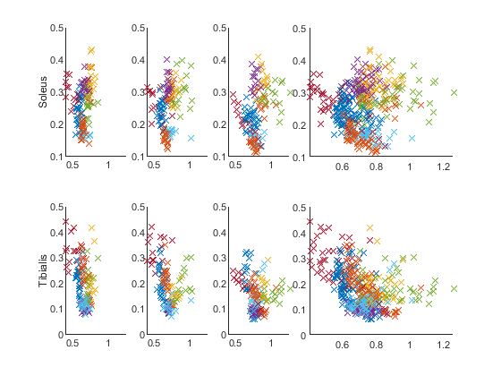

Contents
- Folders
- Abbreviation
- Acquisition Set-Up
- Readjust data to Local Peak instead of FSR
- Remove saturated data
- Normalize EMG (make as a function instead)
- Speed and aceleration (make as a function instead)
- Cross correlation
- Weighted data
- Task 0.1 Simplify the matlab script
- Task 0.2 Show average sweep for single subject
- Task 0.3 Show individual sweep for single subject
- Task 1.1 FC correlation with EMG (Seperate steps, Single subject)
- Task 1.2 FC correlation with EMG (Assemble steps)
- Task 1.3 FC correlation with EMG (slopes)
- Speed vs EMG
- Task 2.1 Within step adjustment of EMG acticity due to natural angle variation. (Single subject)
- Task 2.2 Within step adjustment of EMG acticity due to natural angle variation. (Single subject)
- Task 2.3 Within step adjustment of EMG acticity due to natural angle variation. (All subject)
- Task 3.1 Horizontal perturbation.
- Task 3.2 Horizontal perturbation boxplot
- Task 4.1 Vertical perturbation
- Task 5.0 Pre-baseline vs Post-baseline
- Task 5.0 Show individual Unload trials
- Task 6.0 make foot movement graph
- finsihed
clc
clear;
close all;
Folders
included_vertical_data_processing = false; if included_vertical_data_processing == false msg = 'Vertical data processing is disabled \n'; fprintf(2,msg); end fprintf('script: Folder . . . '); tic names = ["thomas", "benedikte", "andreas", "andrew", "gritt", "maria", "trine", "trine2", "Christian", "Soeren"]; % "mia" excluded names_indiv = ["andreas", "andrew", "benedikte", "gritt", "maria", "thomas", "trine", "trine2"]; % "mia" excluded % CTL2: andrew, Gritt, thomas, Mia, Trine, Trine 2 % Define data path addpath("C:/Users/BuusA/OneDrive - Aalborg Universitet/10. semester (Kandidat)/Matlab files/FunctionFiles") folderpath_preprocessed_data = "C:/Users/BuusA/OneDrive - Aalborg Universitet/10. semester (Kandidat)/Matlab files/data_preprocessed/"; folderpath_individuel_data = "C:/Users/BuusA/OneDrive - Aalborg Universitet/10. semester (Kandidat)/Matlab files/Indiv_data/"; % Preallocation total_data = cell(1,1,numel(names)); total_type = cell(1,1,numel(names)); total_step = cell(1,1,numel(names)); if included_vertical_data_processing % Load vertical data for i = 1:numel(names_indiv) load(folderpath_individuel_data + names_indiv(i) + ".mat" ); total_data_vertical{:,:,i} = data_indiv; load(folderpath_individuel_data + names_indiv(i) + "_type.mat"); total_type_vertical{:,:,i} = type; end end % Load preproccessed data for i = 1:length(names) load(folderpath_preprocessed_data + names(i) + "_data.mat"); total_data{:,:,i} = data; % size(data) = [3,4] % example: data{protocol, sensor}(sweep, data number) load(folderpath_preprocessed_data + names(i) + "_type.mat"); total_type{:,:,i} = type; % size(type) = [1,4] % example: type{1:2} = [VER_yes, VER_no]; type{3:4} = [HOR_yes, HOR_no]; load(folderpath_preprocessed_data + names(i) + "_step.mat"); total_step{:,:,i} = step_index; % size(step_index) = [3,1] % example: step_index{protocol}(sweep, step) end fprintf('done [ %4.2f sec ] \n', toc);
Vertical data processing is disabled script: Folder . . . done [ 3.88 sec ]
Abbreviation
fprintf('script: Abbreviation . . . '); tic % protocol abbreviation types CTL = 1; VER = 2; HOR = 3; CTL2 = 4; proto_all = [CTL, VER, HOR]; % Sensor abbreviation type SOL = 1; TA = 2; ANG = 3; FSR = 4; time = 5; VEL = 6; ACC = 7; % Plotting labels labels = ["Soleus"; "Tibialis"; "Position"; ""; ""; "Velocity"; "Acceleration"]; labels_ms = ["Soleus"+newline+"[\muV]";"Tibialis"+newline+"[\muV]"; "Position"+newline+"[Deg]"; ""; "Time"+newline+"[ms]"; "Velocity"+newline+"[Deg/ms]";"Acceleration"+newline+"[Deg/ms^2]"]; labels_sec = ["Soleus"+newline+"[\muV]";"Tibialis"+newline+"[\muV]"; "Position"+newline+"[Deg]"; ""; "Time"+newline+"[sec]";"Velocity"+newline+"[Deg/s]";"Acceleration"+newline+"[Deg/s^2]"]; % Global arrays align_with_obtions = ["second_begin", "four_begin", "six_begin"]; steps_tested = [2,4,6]; % Global function ms2sec = @(x) x*10^-3; % Ms to sec sec2ms = @(x) x*10^3; % Sec to ms % Global window definition screensize = get(0,'ScreenSize'); width = screensize(3); height = screensize(4); fprintf('done [ %4.2f sec ] \n', toc);
script: Abbreviation . . . done [ 0.00 sec ]
Acquisition Set-Up
fprintf('script: Acquisition Set-Up . . . '); tic; sweep_length = 10; % Signal length in second Fs = 2000; % Samples per second dt = 1/Fs; % Seconds per sample pre_trig = 4; % Pre-trigger N = Fs*sweep_length; % Total number of samples per signal fprintf('done [ %4.2f sec ] \n', toc);
script: Acquisition Set-Up . . . done [ 0.00 sec ]
Readjust data to Local Peak instead of FSR
fprintf('script: Readjust data to Local Peak instead of FSR . . .'); tic readjust = true; show_gui = false; gui_subject = 10; % . . . . . . . . . . . . . . . . . . . . . . . . folderpath = "C:/Users/BuusA/OneDrive - Aalborg Universitet/10. semester (Kandidat)/Matlab files/Subject_offsets/"; filename = 1+"offset.mat"; error = zeros(numel(proto_all), numel(names),100); % 3x10x100 if readjust for sub = 1:numel(names) % loop through subjects % Some subject only completed one protocol. if any(strcmp(names(sub), ["Christian", "Soeren"])) protocols = [CTL]; else protocols = proto_all; end % Check if an already defined offset file exist for subject filename = sub+"offset.mat"; filepath = fullfile(folderpath, filename); if exist(filepath, 'file') == 2 load(filepath) % return 4x1 cell array called 'offset' total_step{1,1,sub} = offset; % Create offset automatically if no file exist else data = total_data{1,1,sub}; % load data step_index = total_step{1,1,sub}; % load foot placement for proto = protocols for sweep = 1:size(data{proto,ANG},1) % loop through sweeps for step = 1:3 % loop through steps % Find template around foot-strike [rise_num, ~] = func_find_edge(steps_tested(step)); rise_index = step_index{proto}(sweep, rise_num); array = rise_index-400:rise_index+400; template = data{proto,ANG}(sweep, array); signal = data{proto,ANG}(sweep, :); % Peak inside template [pks, locs] = findpeaks(template, 'MinPeakDistance', 200); locs = locs + array(1); % Find the peak that follow the condition the_pks = 0; the_loc = 0; % peaks and locations for i = 1:numel(locs) % loop through locations if pks(i) > signal(locs(i) - 200) && pks(i) > signal(locs(i)+200) the_pks = pks(i); the_loc = locs(i); end end % Update step_index or throw error if the_pks == 0 % non found: error error(proto,sub,sweep) = 1; else % no error step_index{proto}(sweep, rise_num) = the_loc; end end % step end % sweep % Display no-peak idxs temp = find(error(proto,sub,:) == 1); if ~isempty(temp) singleStr = string; for i = 1:numel(temp) singleStr = singleStr + num2str(temp(i)) + " "; end msg = "\n No peak found. Subject: " + sub + ". Sweep: " + singleStr + ". Protocol: " + proto + " "; fprintf(2,msg); end end % proto % Save realigned data total_data{1,1,sub} = data; total_step{1,1,sub} = step_index; % update step_index end % exist end % sub fprintf('\n done [ %4.2f sec ] \n', toc); else fprintf('disable \n'); end % readjust if show_gui fprintf('script: Re-adjust gui - [Waiting for user input]') data = total_data{1,1,gui_subject}; filename = gui_subject+"offset.mat"; filepath = fullfile(folderpath, filename); if exist(filepath, 'file') == 2 load(filepath) % return 4x1 cell array called 'offset' step_index = offset; else step_index = total_step{1,1,gui_subject}; % update step_index end offset = []; % preparer for new input readjustFSR % open gui pause % wait for user input if ~isempty(offset) if exist(filepath, 'file') == 2 prompt = newline + "Want to over save. YES: press >y<. NO, press >n<"+ newline; correctInput = false; while correctInput == false % Wait for correct user input switch input(prompt, 's') % Save user input case "y" correctInput = true; oversave = true; case "n" correctInput = true; oversave = false; otherwise correctInput = false; warning("Input not accepted") end end else oversave = true; end if oversave total_step{1,1,gui_subject} = offset; save(folderpath + gui_subject+"offset",'offset') disp("Data saved") end end fprintf('gui done \n') end
script: Readjust data to Local Peak instead of FSR . . .
done [ 0.03 sec ]
Remove saturated data
fprintf('script: Remove saturated data . . .'); tic remove_saturated = true; % enable or disable threshold = -10; % remove ANG data if lower than span = [0, 20]; % ms % . . . . . . . . . . . . . . . . . . . . . . . . if remove_saturated % From ms to samples span = ms2sec(span)*Fs; % from ms to sample exc_ctl = cell(size(names)); % exclude Control for sub = 1:numel(names) % loop through subjects % Load data data = total_data{1,1,sub}; step_index = total_step{1,1,sub}; % Find saturated idxs for sweep = 1:size(data{CTL,FSR},1) % loop through sweeps for step = 1:3 % loop through steps [rise] = func_find_edge(steps_tested(step)); edge = step_index{CTL}(sweep,rise); y = data{CTL,ANG}(sweep, span(1)+edge:span(2)+edge); if any(find(y<threshold)) exc_ctl{sub} = unique([exc_ctl{sub}, sweep]); end end end % Remove saturated idxs step_index{CTL}(exc_ctl{sub},:) = []; for i = [SOL, TA, FSR, ANG] data{CTL,i}(exc_ctl{sub},:) = []; end % Display which step to remove if ~isempty( exc_ctl{sub} ) msg = "\n Saturated data. Subject: " + sub + ". Sweep: " + num2str(exc_ctl{sub}) + " "; fprintf(2,msg); end % Save data total_data{1,1,sub} = data; total_step{1,1,sub} = step_index; end fprintf('\n done [ %4.2f sec ] \n', toc); else fprintf('disable \n'); end
script: Remove saturated data . . .
Saturated data. Subject: 6. Sweep: 1 4 5 9
done [ 0.13 sec ]
Normalize EMG (make as a function instead)
fprintf('script: Normalize EMG . . . '); tic; normalize = true; % enable or disable span = 20; % how big is the smooth span. normalizing_step = 0; % which step is the data being normalized to [0,2,4]? norm_array_ms = [-800, -200]; % normalize array, denoted in ms % . . . . . . . . . . . . . . . . . . . . . . . . if normalize % Normalize prebaseline control and horizontal for sub = 1:length(names) % loop through subjects % Load data data = total_data{1,1,sub}; step_index = total_step{1,1,sub}; if ~any(strcmp(names(sub), ["Christian", "Soeren"])) % christian and soeren only completed the prebaseline protocol [data, factor(sub,:)] = func_normalize_EMG(step_index, data, 'protocols', [CTL,VER,HOR], 'normalize_to_step', normalizing_step,'span', span); else [data] = func_normalize_EMG(step_index, data, 'protocols', CTL, 'normalize_to_step', normalizing_step,'span', span); end total_data{1,1,sub} = data; % update data end % Normalize vertical if included_vertical_data_processing for sub = 1:numel(names_indiv) data = total_data_vertical{1,1,sub}; % load data type = total_type_vertical{1,1,sub}; no = type{2}; yes = type{1}; x_axis = data{VER,time}; temp1 = find(floor(norm_array_ms(1)) == x_axis); temp2 = find(floor(norm_array_ms(2)) == x_axis); norm_sample = [temp1, temp2(1)]; sol_max = max(mean(data{VER,SOL}(no,norm_sample(1):norm_sample(2)),1)); ta_max = max(mean(data{VER,TA }(no,norm_sample(1):norm_sample(2)),1)); for sweep = 1:size(data{VER,SOL},1) % sweep data{VER,SOL}(sweep,:) = data{VER,SOL}(sweep,:)/sol_max; data{VER,TA }(sweep,:) = data{VER,TA }(sweep,:)/ta_max; end total_data_vertical{1,1,sub} = data; % save normalize end end fprintf('done [ %4.2f sec ] \n', toc); else fprintf('disable \n'); end
script: Normalize EMG . . . done [ 1.23 sec ]
Speed and aceleration (make as a function instead)
fprintf('script: Speed and aceleration . . . '); tic; plot_data = false; % enable or disable plot span_position = 5; % inc. sample in guassian filter span span_velocity = 5; % inc. sample in guassian filter span span_acceleration = 10; % inc. sample in gaussian filter span % Control and Horizontal trials for sub = 1:length(names) % subjects data = total_data{1,1,sub}; % load data for proto = proto_all % protocols % Position data{proto,ANG} = data{proto,ANG}.*4+25; % rescale the signal; pos = data{proto,ANG}; %data{proto,ANG} = smoothdata(data{proto,ANG}, 2, 'gaussian', span_position); % gaussian smoothing % velocity diffs1 = diff(data{proto,ANG}, 1, 2)./(dt*10^3); % [deg/sample] diffs1 = padarray(diffs1, [0 1], 'post'); % zeropadding data{proto,VEL} = smoothdata(diffs1, 2, 'gaussian', span_velocity); % gaussian smoothing clear diffs1 % acceleration diffs2 = diff(data{proto,VEL}, 1, 2)./(dt*10^3); % [deg/sample^2] diffs2 = padarray(diffs2, [0 1], 'post'); % zeropadding data{proto,ACC} = smoothdata(diffs2, 2, 'gaussian', span_acceleration); % gaussian smoothing clear diffs2 % Need to plot before and after if plot_data == 1 && sub == 1 step_index = total_step{1,1,sub}; sweep = 1; dur = 1000; before = 500; [rise, ~] = func_find_edge(4); rise_index = step_index{CTL}(sweep,rise); display_array = rise_index-before:rise_index+dur; figure; hold on subplot(311) plot(display_array, pos(1,display_array),'-o', display_array, data{proto,ANG}(sweep,display_array),'-x') legend(["raw", "filtered"]) subplot(312) plot(display_array, diffs1(1,display_array),'-o',display_array, data{proto,VEL}(sweep,display_array),'-x') legend(["raw", "filtered"]) subplot(313) plot(display_array, diffs2(1,display_array),'-o', display_array, data{proto,ACC}(sweep,display_array),'-x') legend(["raw", "filtered"]) end end total_data{1,1,sub} = data; end if included_vertical_data_processing % Vertical perturbation for sub = 1:numel(names_indiv) data = total_data_vertical{1,1,sub}; for i = 1:size(data{VER,1},1) % sweeps % Position [d] %data{VER,ANG} = data{VER,ANG}.*4+25; % rescale the signal; % Velocity [d/s] diffs1 = diff(data{VER,ANG}, 1, 2)./(dt*10^3); % [deg/sample] diffs1 = padarray(diffs1, [0 1], 'post'); % zeropadding data{VER,VEL} = smoothdata(diffs1, 2, 'gaussian', span_velocity); % gaussian smoothing % Acceleration [d/s^2] diffs2 = diff(data{VER,VEL}, 1, 2)./(dt*10^3); % [deg/sample^2] diffs2 = padarray(diffs2, [0 1], 'post'); % zeropadding data{VER,ACC} = smoothdata(diffs2, 2, 'gaussian', span_acceleration); % gaussian smoothing end total_data_vertical{1,1,sub} = data; end end fprintf('done [ %4.2f sec ] \n', toc);
script: Speed and aceleration . . . done [ 3.74 sec ]
Cross correlation
fprintf('script: Cross correlation . . . '); tic croos_bool = true; templ_array = [500:1500]; % template array, denoted in samples show_cross = false; subject = 4; if croos_bool && included_vertical_data_processing for sub = 1:numel(names_indiv) % Load data data = total_data_vertical{1,1,sub}; type = total_type_vertical{1,1,sub}; no = type{2}; yes = type{1}; x_axis = data{VER,time}; % Re-align - cross correlation y_yes = mean(data{VER,SOL}(yes,:),1); y_no = mean(data{VER,SOL}(no,:),1); template = mean(data{VER,SOL}(no,templ_array),1); [rx, lags] = xcorr(y_yes, template); % Cross-correlation % Re-align - find Peaks [pks, locs] = findpeaks(rescale(rx), 'MinPeakDistance', 500); tmp = find(lags(locs) > 0); pks = pks(tmp); locs = locs(tmp); delay = templ_array(1)-lags(locs(1)); % denoted in samples delay_ms = sec2ms(delay*dt); % Re-align - actual for sweep = 1:numel(no) for type = [SOL, TA, ANG, VEL] data{VER,type}(no(sweep),:) = [data{VER,type}(no(sweep),delay+1:end), zeros(1, delay)]; end end % Show cross correlation if and(show_cross, sub == subject) % Check if a figure with the name 'TASK3' is open fig = findobj('Name', 'Cross correlation'); if ~isempty(fig), close(fig); end figure('name', 'Cross correlation'); subplot(311); hold on plot(templ_array, template, 'color', [0.7, 0.7, 0.7], 'LineWidth', 5 ) plot(y_no, 'color', "blue", 'LineWidth', 2) plot(y_yes, 'color', 'black') title("before") subplot(312); hold on title("Cross correlation") N = numel(y_yes); plot(lags(locs(1)):lags(locs(1))+numel(template)-1, template, 'color', [0.7, 0.7, 0.7], 'LineWidth', 5); plot(0:N-1, y_yes, 'color', 'black') plot(lags, rescale(rx), 'color', 'blue'); plot(lags(locs), pks, 'rx', 'linewidth', 1); plot(lags(locs(1)), pks(1), 'o'); plot([lags(locs(1)), lags(locs(1))], [0,pks(1) ]) subplot(313); hold on title("After") plot(mean(data{VER,SOL}(no,:),1), 'color', "blue", 'LineWidth', 2) plot(mean(data{VER,SOL}(yes ,:),1), 'color', 'black', 'LineWidth', 1) end % Save data total_data_vertical{1,1,sub} = data; end fprintf('done [ %4.2f sec ] \n', toc); else fprintf('disable \n'); end
script: Cross correlation . . . disable
Weighted data
fprintf('script: weighting_data . . . '); tic weighting_data = true; if weighting_data % Find the subject with smallest subject size threshold = 50; for sub = 1:numel(names) data = total_data{1,1,sub}; sub_size = size(data{CTL,ANG},1); % sweep size if threshold > sub_size; threshold = sub_size; end end % Remove sweeps larger than smallest subject size for sub = 1:numel(names) data = total_data{1,1,sub}; % load data step_index = total_step{1,1,sub}; % load data sub_size = size(data{CTL,ANG},1); % sweep size if sub_size > threshold step_index{CTL}(threshold+1:end,:) = []; for i = [SOL, TA, FSR, ANG] data{CTL,i}(threshold+1:end,:) = []; end end total_data{1,1,sub} = data; % save data total_step{1,1,sub} = step_index; % save data end fprintf('done [ %4.2f sec ] \n', toc); else fprintf('disable \n'); end
script: weighting_data . . . done [ 0.18 sec ]
Task 0.1 Simplify the matlab script
Make the script accessible to be navigated by Andrew and Thomas. - clearify parameters meant to be adjusted. - make passive code as function and remove.
Task 0.2 Show average sweep for single subject
fprintf('script: TASK 0.2 . . . '); show_plot = false; % Disable or enable plot subject = 10; % Obtions: 1:8 proto = CTL; % Obtions: CTL, VER, HOR str_sen = ["Position", "Soleus", "Tibialis"]; % Obtions: "Soleus", "Tibialis","Position", "Velocity", "Acceleration"; show_FSR = true; align_bool = true; % Should the data be aligned with step specified in "Align with specific Stair step" alignWithStep = align_with_obtions(1) ; before = 200; after = 100; % . . . . . . . . . . . . . . . . . . . . . . . . if show_plot fprintf(' plot subject: >> ' + names(subject) + ' << \n' ); if align_bool % Load data and align with defined step data = total_data{1,1,subject}; step_index = total_step{1,1,subject}; temp = cell(3,7); [temp{proto,:}] = func_align(step_index{proto}, data{proto,[1:4,6:7]}, 'sec_before', ms2sec(before), 'sec_after', ms2sec(after), 'alignStep', alignWithStep); clear data data = temp; x_axis = data{proto,time}; x_axis = sec2ms(x_axis); str_xlabel = "Time [ms]" + newline + "Data normalized to step four"; else % Load data data = total_data{1,1,subject}; x_axis = linspace(-4, 6-dt, N); x_axis = sec2ms(x_axis); str_xlabel = "Time [ms]" + newline + "Data normalized to Force-Platform"; end switch proto case HOR type = total_type{:,:,subject}; yes = type{3}; no = type{4}; str_title = "Horizontal perturbation"; case VER type = total_type{:,:,subject}; yes = type{1}; no = type{2}; str_title = "Vertical perturbation"; case {CTL} str_title = "Pre-baseline Control"; end figure; sgtitle(str_title + " - subject " + names(subject)); for i = 1:size(str_sen,2) % check and plot data included in str_sen switch str_sen(i) case "Soleus" sensor_modality = SOL; str_ylabel = "Soleus" + newline + "[\muV]"; case "Tibialis" sensor_modality = TA; str_ylabel = "Tibialis"+newline+"[\muV]"; case "Position" sensor_modality = ANG; str_ylabel = "Position" + newline + "[Deg]" + newline + "[Dorsal] < > [Plantar]"; case "Velocity" sensor_modality = VEL; str_ylabel = "Velocity" + newline + "[Deg/s]"; case "Acceleration" sensor_modality = ACC; str_ylabel = "Acceleration " + newline + "[Deg/s^2]"; otherwise disp("ERROR" + newline + "String: >>" + str_sen(i) + "<< is not registered.") end switch proto case {VER, HOR} subplot(size(str_sen,2)*100 + 10 + i); hold on; ylabel(str_ylabel); plot(x_axis, mean(data{proto,sensor_modality}(no,:),1), "LineWidth",3, "color",[0.75, 0.75, 0.75]) plot(x_axis, mean(data{proto,sensor_modality}(yes,:),1), "LineWidth",1, "color","black") if show_FSR y_fsr = rescale(mean(data{proto,FSR},1)); yyaxis right; ylabel("Phase"); ylim([-0.1 1.1]) plot(x_axis, y_fsr, "color", "yellow"); end case {CTL, CTL2} subplot(size(str_sen,2)*100 + 10 + i); hold on; ylabel(str_ylabel); % plt std around mean y = mean(data{proto,sensor_modality},1); std_dev = std(data{proto,sensor_modality}); curve1 = y + std_dev; curve2 = y - std_dev; x2 = [x_axis, fliplr(x_axis)]; inBetween = [curve1, fliplr(curve2)]; fill(x2, inBetween, [0.75, 0.75, 0.75], 'LineStyle','none'); plot(x_axis, y, 'LineWidth', 2, "color","black"); if show_FSR % show FSR if enabled y_fsr = rescale(mean(data{proto,FSR},1)); yyaxis right; ylabel("Phase"); ylim([-0.1 1.1]) plot(x_axis, y_fsr, "color", "yellow"); end end if i == size(str_sen,2) xlabel(str_xlabel) end end clear y_fsr else fprintf('disable \n'); end
script: TASK 0.2 . . . disable
Task 0.3 Show individual sweep for single subject
undersøg for metodisk fejl.
fprintf('script: TASK 0.3 . . . '); show_plot = false; % Disable or enable plot subject = 10; % Obtions: 1:9 proto = CTL; % Obtions: CTL sensor_modality = SOL; % Obtions: SOL, TA, ANG, VEL, ACC before = 50; % before foot strike included in ms after = 0; % after foot lift-off included in ms % . . . . . . . . . . . . . . . . . . . . . . . . if show_plot fprintf('plot subject: >> ' + names(subject) + ' << \n' ); data = total_data{1,1,subject}; step_index = total_step{1,1,subject}; x_axis_total = linspace(-4, 6-dt, N); % time axis sweepNum = size(data{proto,ANG},1); % total sweep size figure('name','control sweep'); % Begin plot loop = true; sweep = 1; while loop == true clc % clear cmd promt sgtitle("Sweep: " + sweep) % display current sweep in promt subplot(211); % plot data yyaxis left; plot(x_axis_total, mean(data{proto,sensor_modality},1), '-', "LineWidth",3, "color",[0.75, 0.75, 0.75]) % mean plt hold on plot(x_axis_total, data{proto,sensor_modality}(sweep,:), '-', "LineWidth",1, "color","black") % sweep plt hold off % plt formalia xlabel("Time"+newline+"[sec]") ylabel(labels_ms(sensor_modality)) title(['Black graph, Sweep data. {\color{gray} Gray graph, Mean data [n=' num2str(sweepNum) '].}']) if show_FSR y_fsr = rescale(data{proto,FSR}(sweep,:)); yyaxis right; ylabel("Phase"); ylim([-0.1 1.1]); plot(x_axis_total,y_fsr, "color", "red"); end % Define the data for each step clear y for k = 1:3 clear data_align data_align = cell(3,7); [data_align{proto,:}] = func_align(step_index{proto}, data{proto,[1:4,6:7]}, 'sec_before', ms2sec(before), 'sec_after', ms2sec(after), 'alignStep', align_with_obtions(k)); x_axis = data_align{proto,time}; y{k,2} = sec2ms(x_axis); y{k,1} = data_align{proto,sensor_modality}(sweep,:); y{k,3} = mean(data_align{proto,sensor_modality},1); end % plot data for each step for k = 1:3 % loop through steps subplot(233+k); hold on; if sensor_modality == or(SOL,TA) ylim([0 ceil(max([max(y{1,1}), max(y{2,1}), max(y{3,1})])/100)*100]) end plot(y{k,2}, y{k,3}, "LineWidth",2, "color", [0.75, 0.75, 0.75]) % Mean plot(y{k,2}, y{k,1}, "LineWidth",1, "color","black") % Sweep ylim auto YL = get(gca, 'YLim'); ylim([YL(1) YL(2)]); plot([0, 0],[YL(1) YL(2)], "--","LineWidth",1, "Color", "red") % plt fsr % plt formalia xlabel("Time"+newline+"[ms]") title("Step: " + steps_tested(k)) ylabel(labels_ms(sensor_modality)) end % Wait for user input correctInput = false; prompt = "Continue, press >c<" + newline + "Quite, press >q<"+ newline + "Change sweep number, press >t<"+ newline; while correctInput == false % Wait for correct user input str = input(prompt, 's'); % Save user input if strcmp(str,"q") % If pressed - Quite the loop disp("Loop stopped") loop = false; correctInput = true; fig = findobj('Name', 'control sweep'); if ~isempty(fig), close(fig); end elseif strcmp(str,"t") % If pressed - Change sweep number sweep = input("New sweep number: ")-1; correctInput = true; elseif strcmp(str,"c") % If pressed - Continue to next sweep correctInput = true; end if correctInput == false warning("Input not accepted") end end sweep = sweep + 1; % Continue to next sweep if sweep > size(data{proto,sensor_modality},1) % stop loop if max sweep reached loop = false; end end else fprintf('disable'); end
script: TASK 0.3 . . . disable
Task 1.1 FC correlation with EMG (Seperate steps, Single subject)
Find individuelle outliner og undersøg for refleks response.
fprintf('\nscript: TASK 1.1 . . . '); tic show_plot = false; % plot the following figures for this task subject = 4; % subject to analyse protocol = CTL; % Only works for pre and post baseline trials before = 200; after = 50; xlimits = [-before 300]; savepgn = false; inc_sub = [1,2,3,4,5,7,8,9,10]; % Exclude sub 6 % . . . . . . . . . . . . . . . . . . . . . . . . % General search bars: dep_off = 39; dep_len = 20; step = 2; predict_search(step,:) = [0,20]; depend_search(step,:) = [predict_search(step,1)+dep_off,predict_search(step,1)+dep_off+dep_len]; % ms step = 4; predict_search(step,:) = [0,20]; depend_search(step,:) = [predict_search(step,1)+dep_off,predict_search(step,1)+dep_off+dep_len]; % ms step = 6; predict_search(step,:) = [0,20]; depend_search(step,:) = [predict_search(step,1)+dep_off,predict_search(step,1)+dep_off+dep_len]; % ms % Preallocation predictor_value = cell(size(names)); depended_value = cell(size(names)); for sub = inc_sub % loop through subjects if ~readjust % readjust disabled. Manuel search-bars applied switch sub case 1 predict_search(2,:) = [1.5,1.5+20]; depend_search(2,:) = [predict_search(2,1)+dep_off,predict_search(2,1)+dep_off+dep_len]; % ms predict_search(4,:) = [-0.5,20-0.5]; depend_search(4,:) = [predict_search(4,1)+dep_off,predict_search(4,1)+dep_off+dep_len]; % ms predict_search(6,:) = [-2,20-2]; depend_search(6,:) = [predict_search(6,1)+dep_off,predict_search(6,1)+dep_off+dep_len]; % ms case 2 predict_search(2,:) = [-12,20-12]; depend_search(2,:) = [predict_search(2,1)+dep_off,predict_search(2,1)+dep_off+dep_len]; % ms predict_search(4,:) = [3,20-3]; depend_search(4,:) = [predict_search(4,1)+dep_off,predict_search(4,1)+dep_off+dep_len]; % ms predict_search(6,:) = [-4.5,20-4.5]; depend_search(6,:) = [predict_search(6,1)+dep_off,predict_search(6,1)+dep_off+dep_off]; % ms case 3 predict_search(2,:) = [0.5, 20+0.5]; depend_search(2,:) = [predict_search(2,1)+dep_off,predict_search(2,1)+dep_off+dep_len]; % ms predict_search(4,:) = [1.5, 1.5+20]; depend_search(4,:) = [predict_search(4,1)+dep_off,predict_search(4,1)+dep_off+dep_len]; % ms predict_search(6,:) = [3, 3+20]; depend_search(6,:) = [predict_search(6,1)+dep_off,predict_search(6,1)+dep_off+dep_len]; % ms case 4 predict_search(2,:) = [-4.5, 20-4.5]; depend_search(2,:) = [predict_search(2,1)+dep_off,predict_search(2,1)+dep_off+dep_len]; % ms predict_search(4,:) = [-5.5, 20-5.5]; depend_search(4,:) = [predict_search(4,1)+dep_off,predict_search(4,1)+dep_off+dep_len]; % ms predict_search(6,:) = [-6.5, 20-6.5]; depend_search(6,:) = [predict_search(6,1)+dep_off,predict_search(6,1)+dep_off+dep_len]; % ms case 5 predict_search(2,:) = [2, 2+20]; depend_search(2,:) = [predict_search(2,1)+dep_off,predict_search(2,1)+dep_off+dep_len]; % ms predict_search(4,:) = [2.5, 2.5+20]; depend_search(4,:) = [predict_search(4,1)+dep_off,predict_search(4,1)+dep_off+dep_len]; % ms predict_search(6,:) = [2.5, 2.5+20]; depend_search(6,:) = [predict_search(6,1)+dep_off,predict_search(6,1)+dep_off+dep_len]; % ms case 6 predict_search(2,:) = [-2, 18]; depend_search(2,:) = [predict_search(2,1)+dep_off,predict_search(2,1)+dep_off+dep_len]; % ms predict_search(4,:) = [1, 21]; depend_search(4,:) = [predict_search(4,1)+dep_off,predict_search(4,1)+dep_off+dep_len]; % ms predict_search(6,:) = [0, 20]; depend_search(6,:) = [predict_search(6,1)+dep_off,predict_search(6,1)+dep_off+dep_len]; % ms case 7 predict_search(2,:) = [-13.5, 20-13.5]; depend_search(2,:) = [predict_search(2,1)+dep_off,predict_search(2,1)+dep_off+dep_len]; % ms predict_search(4,:) = [-15.5, 20-15.5]; depend_search(4,:) = [predict_search(4,1)+dep_off,predict_search(4,1)+dep_off+dep_len]; % ms predict_search(6,:) = [-20.5, -0.5]; depend_search(6,:) = [predict_search(6,1)+dep_off,predict_search(6,1)+dep_off+dep_len]; % ms case 8 predict_search(2,:) = [-20,0]; depend_search(2,:) = [predict_search(2,1)+dep_off,predict_search(2,1)+dep_off+dep_len]; % ms predict_search(4,:) = [-9.5,20-9.5]; depend_search(4,:) = [predict_search(4,1)+dep_off,predict_search(4,1)+dep_off+dep_len]; % ms predict_search(6,:) = [-9.5,20-9.5]; depend_search(6,:) = [predict_search(6,1)+dep_off,predict_search(6,1)+dep_off+dep_len]; % ms case 9 predict_search(2,:) = [-53.5,20-53.5]; depend_search(2,:) = [predict_search(2,1)+dep_off,predict_search(2,1)+dep_off+dep_len]; % ms predict_search(4,:) = [-7,20-7]; depend_search(4,:) = [predict_search(4,1)+dep_off,predict_search(4,1)+dep_off+dep_len]; % ms predict_search(6,:) = [-41,20-41]; depend_search(6,:) = [predict_search(6,1)+dep_off,predict_search(6,1)+dep_off+dep_len]; % ms case 10 predict_search(2,:) = [-69,20-69]; depend_search(2,:) = [predict_search(2,1)+dep_off,predict_search(2,1)+dep_off+dep_len]; % ms predict_search(4,:) = [-56,20-56]; depend_search(4,:) = [predict_search(4,1)+dep_off,predict_search(4,1)+dep_off+dep_len]; % ms predict_search(6,:) = [-61,20-61]; depend_search(6,:) = [predict_search(6,1)+dep_off,predict_search(6,1)+dep_off+dep_len]; % ms end end %readjust % Remember values for later plt if sub == subject predict_search_plt = predict_search; depend_search_plt = depend_search; end % Load data from defined subject defined by loop data = total_data{1,1,sub}; step_index = total_step{1,1,sub}; % Find predictor and depended for k = 1:3 step = steps_tested(k); [rise, fall] = func_find_edge(step); % rise and fall value for the given step falling = []; falling = step_index{protocol}(:,fall); % fall indexes for all sweeps rising = []; rising = step_index{protocol}(:,rise); % rise indexes for all sweeps step_sec{sub}(k,:) = (falling(:) - rising(:))*dt; % duration of each step phase, unit [sec] % Re-define window ms to sample predict_search_index = floor(ms2sec(predict_search(step,:))*Fs); % unit [sample] depend_search_index = floor(ms2sec(depend_search(step,:))*Fs); % unit [sample] for sweep = 1:size(data{protocol,1},1) % Find rise index for the given step and define window rise_index = step_index{protocol}(sweep,rise); predict_search_array = []; predict_search_array = predict_search_index(1)+rise_index : predict_search_index(2)+rise_index; depend_search_array = []; depend_search_array = depend_search_index(1)+rise_index : depend_search_index(2)+rise_index; % PREDICTOR VALUES: ang_data = rescale(data{protocol,ANG}((sweep),:)); %predictor_value{sub}(step,sweep) = mean(data{protocol,ANG}((sweep), predict_search_array),2); %predictor_value{sub}(step, sweep) = (data{protocol,ANG}((sweep),predict_search_array(1)) - data{protocol,ANG}((sweep),predict_search_array(end))) / diff(predict_search(step,:)); %predictor_value{sub}(step,sweep) = mean(ang_data(predict_search_array)); predictor_value{sub}(step,sweep) = (ang_data(predict_search_array(1)) - ang_data(predict_search_array(end))) / diff(predict_search(step,:)); % DEPENDED VALUES for EMG = [SOL, TA] EMG_data = (data{protocol,EMG}((sweep),:)); step_EMG{sub}(EMG,k,sweep) = mean(EMG_data( [rising(sweep):falling(sweep)] )); % EMG activity for the whole standphase depended_value{sub}(EMG, step, sweep) = max(EMG_data(depend_search_array)) - mean(EMG_data(depend_search_array)); %depended_value{sub}(sensory_type, step, sweep) = mean(data{protocol,sensory_type}((sweep), depend_search_array),2); end end %sweep end %step end if show_plot if ~readjust msg = "Be Aware: Data re-adjustment is disabled. Manuel defined search-bars applied . . . "; fprintf(2,msg); else fprintf(' Data re-adjustment enabled. General search bar applied . . .') end % Load data for plot, defined by >> subject << data = total_data{1,1,subject}; step_index = total_step{1,1,subject}; % Plot figure fig = findobj('Name', 'Pre-baseline'); if ~isempty(fig), close(fig); end figSize = [50 50 width-200 height-200]; % where to plt and size figure('Name', 'Pre-baseline','Position', figSize); % begin plot sgtitle("TASK 1.1 Data: Prebaseline. Subject: " + subject + ". [n = " + size(data{protocol,1},1) + "]."); % Patch properties y_pat = [-1000 -1000 1000 1000]; patchcolor = "blue"; FaceAlpha = 0.4; for k = 1:3 % loop through steps x_pat_pre = [predict_search_plt(steps_tested(k),1) predict_search_plt(steps_tested(k),2) predict_search_plt(steps_tested(k),2) predict_search_plt(steps_tested(k),1)]; x_pat_dep = [depend_search_plt(steps_tested(k),1) depend_search_plt(steps_tested(k),2) depend_search_plt(steps_tested(k),2) depend_search_plt(steps_tested(k),1)]; data_plot = cell(3,7); [data_plot{protocol,:}] = func_align(step_index{protocol}, data{protocol,[1:4,6:7]}, 'sec_before', ms2sec(before), 'sec_after', ms2sec(after), 'alignStep', align_with_obtions(k)); % Predictor sensor_type = [ANG, VEL]; % Ankle and velocity for i = 1:numel(sensor_type) subplot(4,3,0+k + (i-1)*3); hold on; % Ankel % Formalia setup ylabel("Position"); title("Step " + k*2) subtitle("Ankel" +" "+ predict_search_plt(steps_tested(k),1) + " : "+predict_search_plt(steps_tested(k),2)+"ms") xlim(xlimits) % Plt data y = mean(data_plot{protocol,sensor_type(i)},1); std_dev = std(data_plot{protocol,sensor_type(i)}); curve1 = y + std_dev; curve2 = y - std_dev; x_axis = data_plot{protocol,time}; x_axis = sec2ms(x_axis); x2 = [x_axis, fliplr(x_axis)]; inBetween = [curve1, fliplr(curve2)]; fill(x2, inBetween, [0.75, 0.75, 0.75], 'LineStyle','none'); plot(x_axis, y, 'LineWidth', 2, "color","black"); YL = get(gca, 'YLim'); ylim([YL(1) YL(2)]); patch(x_pat_pre,y_pat,patchcolor,'FaceAlpha',FaceAlpha, 'EdgeColor', "none") end % Depended sensor_type = [SOL, TA]; % Soleus and Tibialis for i = 1:numel(sensor_type) subplot(4,3, 6+k+(i-1)*3); hold on; % Formalia setup ylabel(labels_ms(sensor_type(i))); subtitle(labels(sensor_type(i)) +" "+ depend_search_plt(steps_tested(k),1) + " : "+depend_search_plt(steps_tested(k),2)+"ms") xlim(xlimits) % Plt data y = mean(data_plot{protocol,sensor_type(i)},1); std_dev = std(data_plot{protocol,sensor_type(i)}); curve1 = y + std_dev; curve2 = y - std_dev; x_axis = data_plot{protocol,time}; x_axis = sec2ms(x_axis); x2 = [x_axis, fliplr(x_axis)]; inBetween = [curve1, fliplr(curve2)]; fill(x2, inBetween, [0.75, 0.75, 0.75], 'LineStyle','none'); plot(x_axis, y, 'LineWidth', 2, "color","black"); YL = get(gca, 'YLim'); ylim([YL(1) YL(2)]); patch(x_pat_dep,y_pat,patchcolor,'FaceAlpha',FaceAlpha, 'EdgeColor', "none") end end % Define the file name and path to save the PNG file filename = "Subject"+subject+".png"; filepath = 'C:/Users/BuusA/OneDrive - Aalborg Universitet/10. semester (Kandidat)/Matlab files/png files/task1 - control step regresion/non-readjusted and all samples/'; fullpath = fullfile(filepath, filename); if savepgn saveas(gcf, fullpath, 'png'); end % ==================================== % begin plot fig = findobj('Name', 'Pre-baseline2'); if ~isempty(fig), close(fig); end screensize = get(0,'ScreenSize'); figSize = [100 100 width-200 height-200]; % where to plt and size figure('Position',figSize,'Name', 'Pre-baseline2'); marker = ["*",".","x"]; sgtitle("Single subject [sub="+ subject +"]. Weighted: "+weighting_data+". Re-align: " + readjust) sensory_type = [SOL, TA]; for i = 1:numel(sensory_type) depended = []; predictor = []; for k = 1:3 subplot(2,5,k+(i-1)*5 ); hold on if k == 1; ylabel(labels(sensory_type(i))); end de = []; de = nonzeros(squeeze(depended_value{subject}(sensory_type(i), steps_tested(k),:))); pr = []; pr = nonzeros(squeeze(predictor_value{subject}(steps_tested(k),:))); mdl = fitlm(pr, de); b = table2array(mdl.Coefficients(1,1)); a = table2array(mdl.Coefficients(2,1)); p_value = round(table2array(mdl.Coefficients(2,4)), 3); r2 = round(mdl.Rsquared.Adjusted, 3); linearReg = @(x) x*a + b; plot(pr, de, marker(k), "color", "blue") plot(pr, linearReg(pr), "color", "red") if p_value < 0.05 subtitle(['P-value: {\color{black} ' num2str(p_value) '}. R^2' num2str(r2)]) else subtitle(['P-value: {\color{red} ' num2str(p_value) '}. R^2' num2str(r2)]) end title("Step " + steps_tested(k)) subplot(2,5,4+5*(i-1):5+5*(i-1)); hold on depended(k,:) = nonzeros(squeeze(depended_value{subject}(sensory_type(i), steps_tested(k),:))); predictor(k,:) = nonzeros(squeeze(predictor_value{subject}(steps_tested(k),:))); plot(predictor(k,:), depended(k,:), marker(k), "color", "blue") end % Linear regression depended_all_step = [depended(1,:) depended(2,:) depended(3,:)]; predictor_all_step = [predictor(1,:) predictor(2,:) predictor(3,:)]; mdl = fitlm(predictor_all_step, depended_all_step); b = table2array(mdl.Coefficients(1,1)); a = table2array(mdl.Coefficients(2,1)); p_value = table2array(mdl.Coefficients(2,4)); r2 = round(mdl.Rsquared.Adjusted, 3); linearReg = @(x) x*a + b; plot(predictor_all_step, linearReg(predictor_all_step), "color", "red") title("All Step ") % Plt formalia legend(["Data: Step 2", "Data: Step 4", "Data: Step 6","Fit"]) if p_value < 0.05 subtitle(['P-value: {\color{black} ' num2str(p_value) '}. R^2' num2str(r2)]) else subtitle(['P-value: {\color{red} ' num2str(p_value) '}. R^2' num2str(r2)]) end end % Set y-limits and x-limits on all subplots ax = findobj(gcf, 'type', 'axes'); ylims = get(ax, 'YLim'); xlims = get(ax, 'XLim'); [~, idx_y_ta] = max(cellfun(@(x) diff(x), ylims(1:4))); [~, idx_y_sol] = max(cellfun(@(x) diff(x), ylims(5:8))); [~, idx_x_ta] = max(cellfun(@(x) diff(x), xlims(1:4))); [~, idx_x_sol] = max(cellfun(@(x) diff(x), xlims(5:8))); idx_y_sol = idx_y_sol+4; idx_x_sol = idx_x_sol+4; for i = 1:numel(ax) if any(i == 1:4) set(ax(i), 'YLim', ylims{idx_y_ta}) set(ax(i), 'XLim', xlims{idx_x_ta}) elseif any(i == 5:8) set(ax(i), 'YLim', ylims{idx_y_sol}) set(ax(i), 'XLim', xlims{idx_x_sol}) end end % Save as PNG filename = "All steps. Subject"+subject+".png"; % filepath = 'C:/Users/BuusA/OneDrive - Aalborg Universitet/10. semester (Kandidat)/Matlab files/png files/task1 - control step regresion/readjusted and all samples/'; fullpath = fullfile(filepath, filename); if savepgn; saveas(gcf, fullpath, 'png'); end fprintf('done [ %4.2f sec ] \n', toc); else fprintf('disable \n'); end
script: TASK 1.1 . . . disable
Task 1.2 FC correlation with EMG (Assemble steps)
fprintf('script: TASK 1.2 . . . '); tic show_plot = false; % . . . . . . . . . . . . . . . . . . . . . . . . if show_plot reg_data = struct; marker = ["*",".","x"]; % Re-arrange data from cell to struct. data_reg = struct; data_reg.dep_steps = cell(2,3); % depended sortet each step, [sol,ta] data_reg.pre_steps = cell(1,3); % predictor sortet each step, [vel] data_reg.pre = []; % depended sortet all step, [sol,ta] data_reg.dep = cell(2,1); % predictor sortet all step, [vel] % Re-arrange data from cell to array and save in struct for sub = inc_sub for step = 1:3 for EMG = [SOL,TA] data_reg.dep_steps{EMG,step} = [data_reg.dep_steps{EMG,step}, nonzeros(squeeze(depended_value{sub}(EMG, steps_tested(step),:)))' ]; data_reg.dep{EMG} = [data_reg.dep{EMG}, nonzeros(squeeze(depended_value{sub}(EMG, steps_tested(step),:)))' ]; end data_reg.pre = [data_reg.pre, nonzeros(squeeze(predictor_value{sub}(steps_tested(step),:)))']; data_reg.pre_steps{step} = [data_reg.pre_steps{step}, nonzeros(squeeze(predictor_value{sub}(steps_tested(step),:)))']; end end % Defining plt window size figSize = [100 100 width-200 height-200]; % where to plt and size fig = findobj('Name', 'Pre-baseline all subject'); if ~isempty(fig), close(fig); end figure('Name','Pre-baseline all subject','Position', figSize); % begin plot sgtitle("Correlation [n="+numel(inc_sub)+"]. Weighted: "+weighting_data+". Re-align: " + readjust) % Plot subject data in different colors for sub = inc_sub % subject for sensory_type = [SOL,TA] % muscle type depended = []; predictor = []; for k = 1:3 % loop steps depended(k,:) = nonzeros(squeeze(depended_value{sub}(sensory_type, steps_tested(k),:))); predictor(k,:) = nonzeros(squeeze(predictor_value{sub}(steps_tested(k),:))); % Remember p-value and slope for later plot mdl = fitlm(predictor(k,:), depended(k,:)); reg_data.slopes(sub, sensory_type, k) = table2array(mdl.Coefficients(2,1)); % slopes reg_data.p_value(sub, sensory_type, k) = table2array(mdl.Coefficients(2,4)); % p_values % Plt the individuel steps subplot(2, 5, 5*(sensory_type-1)+k); hold on; % 5*(s-1)+k={1,2,3,6,7,8}, k={1,2,3}, s={1,2} plot(predictor(k,:), depended(k,:),'x'); title("Step " + steps_tested(k)) xlabel("Pos(s-e)/w") ylabel(labels(sensory_type)) end % Plt the combined steps subplot(2,5, 4+5*(sensory_type-1):5+5*(sensory_type-1)); hold on % 4+5*(s-1)={4,9}, 5+5*(s-1)={5,10} s={1,2} plot(predictor(:)', depended(:)','x') title("All steps") ylabel(labels(sensory_type)) xlabel("Pos(s-e)/w") % Remember p-value and slope for later plot mdl = fitlm(predictor(:), depended(:)); reg_data.slopes(sub, sensory_type, 4) = table2array(mdl.Coefficients(2,1)); % slopes reg_data.p_value(sub, sensory_type, 4) = table2array(mdl.Coefficients(2,4)); % p_values end end % Set y-limits and x-limits on all subplots ax = findobj(gcf, 'type', 'axes'); ylims = get(ax, 'YLim'); xlims = get(ax, 'XLim'); [~, idx_y_ta] = max(cellfun(@(x) diff(x), ylims(1:4))); [~, idx_y_sol] = max(cellfun(@(x) diff(x), ylims(5:8))); [~, idx_x_ta] = max(cellfun(@(x) diff(x), xlims(1:4))); [~, idx_x_sol] = max(cellfun(@(x) diff(x), xlims(5:8))); idx_y_sol = idx_y_sol+4; idx_x_sol = idx_x_sol+4; for i = 1:numel(ax) if any(i == 1:4) set(ax(i), 'YLim', ylims{idx_y_ta}) set(ax(i), 'XLim', xlims{idx_x_ta}) elseif any(i == 5:8) set(ax(i), 'YLim', ylims{idx_y_sol}) set(ax(i), 'XLim', xlims{idx_x_sol}) end end % Plot regression for sensory_type = [SOL,TA] % loop for step = 1:3 % loop steps mdl = fitlm(data_reg.pre_steps{step}, data_reg.dep_steps{sensory_type, step}); b = table2array(mdl.Coefficients(1,1)); a = table2array(mdl.Coefficients(2,1)); p_value = table2array(mdl.Coefficients(2,4)); r2 = round(mdl.Rsquared.Adjusted,3); linearReg = @(x) x*a + b; subplot(2, 5, 5*(sensory_type-1)+step); hold on; plot(data_reg.pre_steps{step}, linearReg(data_reg.pre_steps{step}), "color", "red") if p_value < 0.05 subtitle(['P-value: {\color{black} ' num2str(p_value) '}. R^2' num2str(r2)]) else subtitle(['P-value: {\color{red} ' num2str(p_value) '}. R^2' num2str(r2)]) end end mdl = fitlm(data_reg.pre, data_reg.dep{sensory_type}); b = table2array(mdl.Coefficients(1,1)); a = table2array(mdl.Coefficients(2,1)); p_value = table2array(mdl.Coefficients(2,4)); r2 = round(mdl.Rsquared.Adjusted,3); linearReg = @(x) x*a + b; subplot(2,5, 4+5*(sensory_type-1):5+5*(sensory_type-1)); hold on plot(data_reg.pre_steps{step}, linearReg(data_reg.pre_steps{step}), "color", "red") if p_value < 0.05 subtitle(['P-value: {\color{black} ' num2str(p_value) '}. R^2' num2str(r2)]) else subtitle(['P-value: {\color{red} ' num2str(p_value) '}. R^2' num2str(r2)]) end end % Save as PNG filename = "All subject (1-"+numel(names)+").png"; fullpath = fullfile(filepath, filename); if savepgn; saveas(gcf, fullpath, 'png'); end fprintf('done [ %4.2f sec ] \n', toc); else fprintf('disable \n'); end
script: TASK 1.2 . . . disable
Task 1.3 FC correlation with EMG (slopes)
Find the best parameters for one subject and apply them to the other subjects. one factor anova
pltShow = false; savepgn = false; if pltShow if exist("reg_data") figSize = [300 250 700 400]; % where to plt and size % Check if a figure with the name 'TASK3' is open fig = findobj('Name', 'slopes'); % If a figure is found, close it if ~isempty(fig), close(fig); end figure('name','slopes','Position', figSize); % begin plot hold on sgtitle("Correlations slopes [sub="+numel(inc_sub)+"]. Weighted: "+weighting_data+". Re-align: " + readjust) for sensory_type = [SOL, TA] for step = 1:4 if step == 4 subplot(1,5,4:5); hold on title("All steps") else subplot(1,5,step); hold on title("Step " + step) end slopes = reg_data.slopes(inc_sub, sensory_type, step); p_value = reg_data.p_value(inc_sub,sensory_type, step); x_value = ones(1,size(slopes,1)); if sensory_type == TA; x_value=x_value+1; end plot([0 3],[0 0], 'color', 'black') plot(x_value(1), mean(slopes), "_", 'Color', 'red', 'linewidth', 4) plot(x_value, slopes, '.', 'color', 'black') % soleus data indiv for i = 1:length(p_value) if p_value(i) < 0.05 plot(x_value, slopes(i), 'o', 'linewidth',2, 'color', [0.75,0.75,0.75]) % soleus data indiv end end xticks([1 2]); xticklabels({'SOL', 'TA'}); grid on; if step == 1 ylabel("Regression Slopes"+newline+" [ \alpha ]") elseif step == 4 legend(["", "Group mean", "Slope (subject)", "< 0.05"]) end end end % Set y-limits on all subplots ax = findobj(gcf, 'type', 'axes'); ylims = get(ax, 'YLim'); max_value = max(cellfun(@max, ylims)); min_value = min(cellfun(@min, ylims)); for i = 1:numel(ax) set(ax(i), 'YLim', ([min_value max_value])) end else msg = "\n Need to run 'Task 1.2' before to enable this section to plot \n"; fprintf(2,msg); end a = num2str(weighting_data) ; b = num2str(readjust); filename = ['Correlations slopes [sub=' num2str(numel(inc_sub)) ']. Weighted ' num2str(weighting_data) ' . Re-align ' num2str(readjust) '.png']; filepath = 'C:/Users/BuusA/OneDrive - Aalborg Universitet/10. semester (Kandidat)/Matlab files/png files/task1 - control step regresion/slopes/'; fullpath = fullfile(filepath, filename); if savepgn; saveas(gcf, fullpath, 'png'); end end
Speed vs EMG
fprintf('script: TASK 1.4 Speed . . . '); tic show_plot_speed = true; EMG_compl_step = true; % . . . . . . . . . . . . . . . . . . % step_ms{sub}(k,:) = (falling(:) - rising(:))*dt; % duration of each step phase, unit [sec] % step_EMG{sub}(EMG,k,sweep) = mean(EMG_data( [rising(sweep):falling(sweep)] )); % EMG activity for the whole standphase % depended_value{sub}(EMG, step, sweep) = max(EMG_data(depend_search_array)) - mean(EMG_data(depend_search_array)); if show_plot_speed % Re-arrange data from cell to struct. speed_reg = struct; speed_reg.pre_steps = cell(1,3); % predictor sortet each step, [time] speed_reg.pre = []; % predictor sortet all step, [time] speed_reg.dep = cell(2,1); % depended sortet all step, [sol,ta] speed_reg.dep_steps = cell(2,3); % depended sortet each step, [sol,ta] % Re-arrange data from cell to array and save in struct for sub = inc_sub for s = 1:3 EMG = [SOL,TA]; for e = 1:numel(EMG) if EMG_compl_step == true step = steps_tested(s); speed_reg.dep_steps{e,s} = [speed_reg.dep_steps{e,s}, squeeze(step_EMG{sub}(EMG(e),s,:))' ]; speed_reg.dep{e} = [speed_reg.dep{e} , squeeze(step_EMG{sub}(EMG(e),s,:))' ]; else data_reg.dep_steps{e,s} = [data_reg.dep_steps{e,s}, squeeze(depended_value{sub}(EMG(e),step,:))' ]; data_reg.dep{e} = [data_reg.dep{e} , squeeze(depended_value{sub}(EMG(e),step,:))' ]; end end speed_reg.pre = [speed_reg.pre , squeeze(step_EMG{sub}(EMG(e),s,:))]; speed_reg.pre_steps{s} = [speed_reg.pre_steps{s}, squeeze(step_EMG{sub}(EMG(e),s,:))']; end end % Begin plot fig = findobj('Name', 'Speed'); if ~isempty(fig), close(fig); end figure('name','Speed'); % begin plot for sub = inc_sub % subject EMG = [SOL, TA]; for e = 1:numel(EMG) for k = 1:3 step = steps_tested(k); x = []; y = []; % Clear the variable x = squeeze(step_sec{sub}(k,:)); if EMG_compl_step == true y = squeeze(step_EMG{sub}(EMG(e),k,:)); else y = squeeze(depended_value{sub}(EMG(e),step,:)); end subplot(2,5,k+(e-1)*5); hold on if k == 1; ylabel(labels(EMG(e))); end plot(x,y,'x') end %step x_all = []; y_all = []; x_all = squeeze(step_sec{sub}(1:3,:)); if EMG_compl_step == true y_all = []; y_all = squeeze(step_EMG{sub}(EMG(e),1:3,:)); else y_all = []; y_all = squeeze(depended_value{sub}(EMG(e),[2,4,6],:)); end subplot(2,5,4+(e-1)*5:5+(e-1)*5); hold on; plot(x_all(:) , y_all(:), 'x') end %emg end %sub % Set y-limits and x-limits on all subplots ax = findobj(gcf, 'type', 'axes'); ylims = get(ax, 'YLim'); xlims = get(ax, 'XLim'); [~, idx_y_ta] = max(cellfun(@(x) diff(x), ylims(1:4))); [~, idx_y_sol] = max(cellfun(@(x) diff(x), ylims(5:8))); [~, idx_x_ta] = max(cellfun(@(x) diff(x), xlims(1:4))); [~, idx_x_sol] = max(cellfun(@(x) diff(x), xlims(5:8))); idx_y_sol = idx_y_sol+4; idx_x_sol = idx_x_sol+4; for i = 1:numel(ax) if any(i == 1:4) set(ax(i), 'YLim', ylims{idx_y_ta}) set(ax(i), 'XLim', xlims{idx_x_ta}) elseif any(i == 5:8) set(ax(i), 'YLim', ylims{idx_y_sol}) set(ax(i), 'XLim', xlims{idx_x_sol}) end end fprintf('done [ %4.2f sec ] \n', toc); else fprintf('disable \n'); end 2+2
script: TASK 1.4 Speed . . . done [ 1.16 sec ]
ans =
4
 Task 2.1 Within step adjustment of EMG acticity due to natural angle variation. (Single subject)
Find whether the EMG activity is passively adjusted to changes in angle trajectories. All steps and seperated step nassarro two plot: inden burst activitet og til max burst activitet (all subject)
fprintf('script: TASK 2.1 . . . '); tic show_plot = false; subject = 2; % protocol = CTL; before = 100; % [ms] after = 0; % [ms] pre = 1; search_area(pre,:) = [0.15; 0.60]; % predictor search window dep = 2; search_area(dep,:) = [0.15; 0.70]; % depended search window % . . . . . . . . . . . . . . . . . . . . . . . . % Load data from subject data = total_data{1,1,subject}; step_index = total_step{1,1,subject}; if show_plot figSize = [200 60 1000 700]; figure('Position', figSize) sgtitle("Within step modulation due to natural angle variation. Subject "+ subject + newline + "{\color{blue}Graph} larger than avg. and {\color{red}Graph} less than avg.") clear win_avg_ang win_avg_sol win_avg_ta for step = 1:3 % Align data needed to be plotted clear temp_plot temp_plot = cell(3,7); [temp_plot{protocol,:}] = func_align(step_index{protocol}, data{proto,[1:4,6:7]}, 'sec_before', ms2sec(before), 'sec_after', ms2sec(after), 'alignStep', align_with_obtions(step)); x_axis = temp_plot{protocol, time}; % Align data needed to calculate window avg clear temp_data temp_data = cell(3,7); [temp_data{protocol,:}] = func_align(step_index{protocol}, data{proto,[1:4,6:7]}, 'alignStep', align_with_obtions(step)); % Defined window for cc = [dep, pre] pct_start_index(cc) = ceil(size(temp_data{protocol,time},2)*search_area(cc,1)); % window begin in idx pct_end_index(cc) = ceil(size(temp_data{protocol,time},2)*search_area(cc,2)); % window end in idx pct_start_sec(cc) = temp_data{protocol,time}(1,pct_start_index(cc)); % window begin in sec pct_end_sec(cc) = temp_data{protocol,time}(1,pct_end_index(cc)); % window end in sec end % Calculate average in window win_avg_ang(step,:) = mean(temp_data{protocol,ANG}(:,pct_start_index(pre) : pct_end_index(pre)),2); % mean value of sweeps window win_avg_sol(step,:) = mean(temp_data{protocol,SOL}(:,pct_start_index(dep):pct_end_index(dep)),2); % mean value of sweeps window win_avg_ta(step,:) = mean(temp_data{protocol,TA}(:,pct_start_index(dep):pct_end_index(dep)),2); % mean value of sweeps window % Sort data according [win_avg_ang(step,:), win_avg_idx] = sort(win_avg_ang(step,:), 'ascend'); % sorts elements in ascending order. win_avg_sol(step,:) = win_avg_sol(step, win_avg_idx); % sort these with found order win_avg_ta(step,:) = win_avg_ta(step, win_avg_idx); % sort these with found order clear lower_index mean_index upper_index % Sort data in groups [low, mid, up] dim = size(win_avg_ang,2); % num of sweeps lower_index(:) = 1:floor(dim/3); mean_index(:) = floor(dim/3)+1:dim-floor(dim/3); upper_index(:) = dim-floor(dim/3)+1:dim; % Mean plot properties color_mean = [150 152 158]/255; LineWidth_mean = 2; % Upper and lower plot properties color_upper = "blue"; color_lower = "red"; upper_style = "--"; lower_style = "-."; LineWidth_UL = 1; % Patch properties y_pat = [-1000 -1000 2000 2000]; patchcolor = [251 244 199]/255; FaceAlpha = 1; EdgeColor = [37 137 70]/255; lineWidth_patch = 2; for cc = [dep, pre] x_pat(cc,:) = [pct_start_sec(cc), pct_end_sec(cc), pct_end_sec(cc), pct_start_sec(cc)]; end % Plot figures % ankel subplot(330+step); hold on; title("Step " + steps_tested(step)) subtitle("Ankel"); ylabel(labels_sec(ANG)) plot(x_axis, mean(temp_plot{protocol, ANG}(win_avg_idx(mean_index),:),1), 'LineWidth', LineWidth_mean, "color", color_mean) plot(x_axis, mean(temp_plot{protocol, ANG}(win_avg_idx(upper_index),:),1), upper_style, 'LineWidth', LineWidth_UL, "color", color_upper) plot(x_axis, mean(temp_plot{protocol, ANG}(win_avg_idx(lower_index),:),1), lower_style,'LineWidth', LineWidth_UL, "color", color_lower) YL = get(gca, 'YLim'); ylim([YL(1) YL(2)]); patch(x_pat(pre,:),y_pat,patchcolor,'FaceAlpha',FaceAlpha, 'EdgeColor', EdgeColor, 'LineWidth', lineWidth_patch) set(gca, 'Layer', 'top') plot(x_axis, mean(temp_plot{protocol, ANG}(win_avg_idx(mean_index),:),1), 'LineWidth', LineWidth_mean, "color", color_mean) plot(x_axis, mean(temp_plot{protocol, ANG}(win_avg_idx(upper_index),:),1), upper_style, 'LineWidth', LineWidth_UL, "color", color_upper) plot(x_axis, mean(temp_plot{protocol, ANG}(win_avg_idx(lower_index),:),1), lower_style,'LineWidth', LineWidth_UL, "color", color_lower) % Soleus subplot(333+step); hold on; subtitle(labels(SOL)) ylabel("Soleus"+newline+"[normalized]") plot(x_axis, mean(temp_plot{protocol, SOL}(win_avg_idx(mean_index),:),1), 'LineWidth', LineWidth_mean, "color", color_mean) plot(x_axis, mean(temp_plot{protocol, SOL}(win_avg_idx(upper_index),:),1), upper_style, 'LineWidth', LineWidth_UL, "color", color_upper) plot(x_axis, mean(temp_plot{protocol, SOL}(win_avg_idx(lower_index),:),1), lower_style,'LineWidth', LineWidth_UL, "color", color_lower) YL = get(gca, 'YLim'); ylim([YL(1) YL(2)]); patch(x_pat(dep,:),y_pat,patchcolor,'FaceAlpha',FaceAlpha, 'EdgeColor', EdgeColor, 'LineWidth', lineWidth_patch) set(gca, 'Layer', 'top') plot(x_axis, mean(temp_plot{protocol, SOL}(win_avg_idx(mean_index),:),1), 'LineWidth', LineWidth_mean, "color", color_mean) plot(x_axis, mean(temp_plot{protocol, SOL}(win_avg_idx(upper_index),:),1), upper_style, 'LineWidth', LineWidth_UL, "color", color_upper) plot(x_axis, mean(temp_plot{protocol, SOL}(win_avg_idx(lower_index),:),1), lower_style,'LineWidth', LineWidth_UL, "color", color_lower) % Tibialis subplot(336+step); hold on; subtitle(labels(TA)) ylabel("Tibialis"+newline+"[normalized]") xlabel(labels_sec(time)) plot(x_axis, mean(temp_plot{protocol, TA}(win_avg_idx(mean_index),:),1), 'LineWidth', LineWidth_mean, "color", color_mean) plot(x_axis, mean(temp_plot{protocol, TA}(win_avg_idx(upper_index),:),1), upper_style, 'LineWidth', LineWidth_UL, "color", color_upper) plot(x_axis, mean(temp_plot{protocol, TA}(win_avg_idx(lower_index),:),1), lower_style,'LineWidth', LineWidth_UL, "color", color_lower) YL = get(gca, 'YLim'); ylim([YL(1) YL(2)]); patch(x_pat(dep,:),y_pat,patchcolor,'FaceAlpha',FaceAlpha, 'EdgeColor', EdgeColor, 'LineWidth', lineWidth_patch) set(gca, 'Layer', 'top') plot(x_axis, mean(temp_plot{protocol, TA}(win_avg_idx(mean_index),:),1), 'LineWidth', LineWidth_mean, "color", color_mean) plot(x_axis, mean(temp_plot{protocol, TA}(win_avg_idx(upper_index),:),1), upper_style, 'LineWidth', LineWidth_UL, "color", color_upper) plot(x_axis, mean(temp_plot{protocol, TA}(win_avg_idx(lower_index),:),1), lower_style, 'LineWidth', LineWidth_UL, "color", color_lower) end fprintf('done [ %4.2f sec ] \n', toc); else fprintf('disable \n'); end
script: TASK 2.1 . . . disable
Task 2.2 Within step adjustment of EMG acticity due to natural angle variation. (Single subject)
fprintf('script: TASK 2.2 . . . '); tic show_plt = false; % . . . . . . . . . . . . . . . . . . . . . . . . if show_plt clear x_sol x_ta % Rearrange data to box plot data step2 = 1; step4 = 2; step6 = 3; % soleus group_low_sol = [win_avg_sol(step2,lower_index) ; win_avg_sol(step4,lower_index) ; win_avg_sol(step6,lower_index)]'; group_mid_sol = [win_avg_sol(step2,mean_index) ; win_avg_sol(step4,mean_index) ; win_avg_sol(step6,mean_index)]'; group_up_sol = [win_avg_sol(step2,upper_index) ; win_avg_sol(step4,upper_index) ; win_avg_sol(step6,upper_index)]'; x_sol = {group_low_sol, group_mid_sol, group_up_sol}; % tibialis group_low_ta = [win_avg_ta(step2,lower_index) ; win_avg_ta(step4,lower_index) ; win_avg_ta(step6,lower_index)]'; group_mid_ta = [win_avg_ta(step2,mean_index) ; win_avg_ta(step4,mean_index) ; win_avg_ta(step6,mean_index)]'; group_up_ta = [win_avg_ta(step2,upper_index) ; win_avg_ta(step4,upper_index) ; win_avg_ta(step6,upper_index)]'; x_ta = {group_low_ta, group_mid_ta, group_up_ta}; % Plot data to get natural y limits figure(13); boxplotGroup(x_sol); YL_sol = get(gca, 'YLim'); close 13 figure(13); boxplotGroup(x_ta); YL_ta = get(gca, 'YLim'); close 13 % Pl % ot boxplot for single subject figure; hold on; blue = [0 0 1]; red = [1 0 0]; gray = color_mean; subplot(211) grpLabels = {'Step 2', 'Step 4', 'Step 6'}; sublabels = {'low', 'mid', 'up'}; boxplotGroup(x_sol,'primaryLabels',sublabels,'SecondaryLabels',grpLabels, 'interGroupSpace',2,'GroupLines',true, 'Colors',[red; gray; blue],'GroupType','betweenGroups') ylim([YL_sol(1) YL_sol(2)]) ylabel("Normalized muscle activity"+newline+"Soleus") % Plot boxplot for single subject subplot(212);hold on; title("Within step adjustment of EMG acticity due to natural angle variation",'FontName','FixedWidth') subtitle("Single Subject. Num: " + subject ,'FontName','FixedWidth') boxplotGroup(x_ta,'primaryLabels',sublabels,'SecondaryLabels',grpLabels, 'interGroupSpace',2,'GroupLines',true, 'Colors',[red; gray; blue],'GroupType','betweenGroups') ylim([YL_ta(1) YL_ta(2)]) ylabel("Normalized muscle activity"+newline+"Tibialis") fprintf('done [ %4.2f sec ] \n', toc); else fprintf('disable \n'); end
script: TASK 2.2 . . . disable
Task 2.3 Within step adjustment of EMG acticity due to natural angle variation. (All subject)
fprintf('script: TASK 2.3 . . . '); tic show_plt = false; % . . . . . . . . . . . . . . . . . . . . . . . . low = 1; mid = 2; up = 3; step2 = 1; step4 = 2; step6 = 3; if show_plt for sub = 1:numel(names) % loop through names for step = 1:3 % loop through steps % align data to find window avg clear data step_index data = total_data{1,1,sub}; step_index = total_step{1,1,sub}; clear temp_data temp_data = cell(3,7); [temp_data{protocol,:}] = func_align(step_index{protocol}, data{proto,[1:4,6:7]}, 'alignStep', align_with_obtions(step)); % Defined window for cc = [dep, pre] pct_start_index(cc) = ceil(size(temp_data{protocol,time},2)*search_area(cc,1)); % window begin in idx pct_end_index(cc) = ceil(size(temp_data{protocol,time},2)*search_area(cc,2)); % window end in idx pct_start_sec(cc) = temp_data{protocol,time}(1,pct_start_index(cc)); % window begin in sec pct_end_sec(cc) = temp_data{protocol,time}(1,pct_end_index(cc)); % window end in sec end clear win_avg_ang win_avg_sol win_avg_ta % Calculate average in window win_avg_ang(step,:) = mean(temp_data{protocol,ANG}(:,pct_start_index(pre) : pct_end_index(pre)),2); % mean value of sweeps window win_avg_sol(step,:) = mean(temp_data{protocol,SOL}(:,pct_start_index(dep):pct_end_index(dep)),2); % mean value of sweeps window win_avg_ta(step,:) = mean(temp_data{protocol,TA}(:,pct_start_index(dep):pct_end_index(dep)),2); % mean value of sweeps window % Sort data according [win_avg_ang(step,:), win_avg_idx] = sort(win_avg_ang(step,:), 'ascend'); % sorts elements in ascending order. win_avg_sol(step,:) = win_avg_sol(step, win_avg_idx); % sort these with found order win_avg_ta(step,:) = win_avg_ta(step, win_avg_idx); % sort these with found order clear lower_index mean_index upper_index % Sort data in groups [low, mid, up] dim = size(win_avg_ang,2); % num of sweeps lower_index(:) = 1:floor(dim/3); mean_index(:) = floor(dim/3)+1:dim-floor(dim/3); upper_index(:) = dim-floor(dim/3)+1:dim; % Subject mean of each subgroup subgroup_sol(sub, step, low) = mean(win_avg_sol(step,lower_index)); subgroup_sol(sub, step, mid) = mean(win_avg_sol(step,mean_index)); subgroup_sol(sub, step, up) = mean(win_avg_sol(step,upper_index)); subgroup_ta(sub, step, low) = mean(win_avg_ta(step,lower_index)); subgroup_ta(sub, step, mid) = mean(win_avg_ta(step,mean_index)); subgroup_ta(sub, step, up) = mean(win_avg_ta(step,upper_index)); end % step end % sub % Rearrange data to box plot data step2 = 1; step4 = 2; step6 = 3; group_low_sol = [subgroup_sol(:,step2,low)' ; subgroup_sol(:,step4,low)' ; subgroup_sol(:,step6,low)' ; (subgroup_sol(:,step2,low)'+subgroup_sol(:,step4,low)'+subgroup_sol(:,step6,low)')./3]'; group_mid_sol = [subgroup_sol(:,step2,mid)' ; subgroup_sol(:,step4,mid)' ; subgroup_sol(:,step6,mid)' ; (subgroup_sol(:,step2,mid)'+subgroup_sol(:,step4,mid)'+subgroup_sol(:,step6,mid)')./3]'; group_up_sol = [subgroup_sol(:,step2,up)' ; subgroup_sol(:,step4,up)' ; subgroup_sol(:,step6,up)' ; (subgroup_sol(:,step2,up)'+subgroup_sol(:,step4,up)'+subgroup_sol(:,step6,up)')./3]'; x_sol = {group_low_sol, group_mid_sol, group_up_sol}; group_low_ta = [subgroup_ta(:,step2,low)' ; subgroup_ta(:,step4,low)' ; subgroup_ta(:,step6,low)'; (subgroup_ta(:,step2,low)'+subgroup_ta(:,step4,low)'+subgroup_ta(:,step6,low)')./3]'; group_mid_ta = [subgroup_ta(:,step2,mid)' ; subgroup_ta(:,step4,mid)' ; subgroup_ta(:,step6,mid)' ; (subgroup_ta(:,step2,mid)'+subgroup_ta(:,step4,mid)'+subgroup_ta(:,step6,mid)')./3]'; group_up_ta = [subgroup_ta(:,step2,up)' ; subgroup_ta(:,step4,up)' ; subgroup_ta(:,step6,up)'; (subgroup_ta(:,step2,up)'+subgroup_ta(:,step4,up)'+subgroup_ta(:,step6,up)')./3]'; x_ta = {group_low_ta, group_mid_ta, group_up_ta}; x_all = {(group_low_sol+group_low_ta)./2, (group_mid_sol+group_mid_ta)./2, (group_up_sol+group_up_ta)./2 } ; % Plot boxplot for single subject figure; hold on; blue = [0 0 1]; red = [1 0 0]; gray = [150 152 158]/255; subplot(211) title("Within step adjustment - All Subject",'FontName','FixedWidth') grpLabels = {'Step 2', 'Step 4', 'Step 6', 'All steps'}; sublabels = {'low', 'mid', 'up'}; %plot([0 4],[100 200]) boxplotGroup(x_sol,'primaryLabels',sublabels,'SecondaryLabels',grpLabels, 'interGroupSpace',2,'GroupLines',true, 'Colors',[red; gray; blue],'GroupType','betweenGroups') %ylim([YL_sol(1) YL_sol(2)]) ylim([0 0.5]) ylabel("Normalized muscle activity"+newline+"Soleus") % Plot boxplot for single subject subplot(212);hold on; boxplotGroup(x_ta,'primaryLabels',sublabels,'SecondaryLabels',grpLabels, 'interGroupSpace',2,'GroupLines',true, 'Colors',[red; gray; blue],'GroupType','betweenGroups') %ylim([YL_ta(1) YL_ta(2)] ylim([0 0.5]) ylabel("Normalized muscle activity"+newline+"Tibialis") fprintf('done [ %4.2f sec ] \n', toc); else fprintf('disable \n'); end %show_plt
script: TASK 2.3 . . . disable
Task 3.1 Horizontal perturbation.
plot difference i hastighed ift soleus aktivitet som regression plot. 5 første stræk mod 5 sidste stræk
show_plt = false; subject = 5; before = 600; after = 200; xlimit = [-100 200]; firstSweep = false; pltDiff = false; oneSweep = true; oneSweepNum = [8,11,13,14,15,16,17,19] %SUBJECT 2 % SOL: % SLR : [1,16,18,19] % MLR : [7,8,9,11,17,18] % TA: % SLR : [13,16,18] % MLR : [1,3,5,16,18] %SUBJECT 1 % SOL % SLR : [2,10,12,14] % MLR : [1,3,4,9,10,12,13,14,15,17,19] % TA: % SLR : [16,18] % MLR : [ %SUBJECT 3 % SOL % SLR : [2,4,8,13,14,16] % MLR : [5,7,9,11,15] % TA: % SLR : [11] % MLR : [11,12] %SUBJECT 5 % SOL % SLR : [8,18,19] % MLR : [18] % TA: % SLR : [8,11,13,14,15,16,17,19] % MLR : [1,7] clear offset switch firstSweep case true offset(1) = 18; %30; offset(2) = 13; %38; offset(3) = 19; %19 offset(4) = 0; offset(5) = 10; %31; offset(6) = 22; %31.5; offset(7) = 18; %23; offset(8) = 26; case false offset(1) = 30; offset(2) = 38; offset(3) = 19; offset(4) = 0; offset(5) = 31; offset(6) = 31; offset(7) = 23; offset(8) = 26; end % . . . . . . . . . . . . . . . . . . . . . . . . if show_plt data = total_data{1,1,subject}; step_index = total_step{1,1,subject}; type = total_type{1,1,subject}; yes = type{3}; no = type{4}; clear temp_plot temp_plot = cell(3,7); [temp_plot{HOR,:}] = func_align(step_index{HOR}, data{HOR,[1:4,6:7]}, 'sec_before', ms2sec(before), 'sec_after', ms2sec(after), 'alignStep', "four_begin"); x_axis = sec2ms(temp_plot{HOR, time}); %plot properties no_color = [0.75, 0.75, 0.75]; yes_color = "black"; zero_color = "red"; diff_color = "green"; no_LineWidth = 3; yes_LineWidth = 1; zero_LineWidth = 1; % patch properties y_pat = [-1000 -1000 2000 2000]; patchcolor_slr = "blue" ; %[251 244 199]/255; patchcolor_mlr = "black" ; %[251 244 199]/255; FaceAlpha = 0.2; EdgeColor = [37 137 70]/255; lineWidth_patch = 2; x_pat_SLR = [offset(subject)+39 offset(subject)+59 offset(subject)+59 offset(subject)+39]; x_pat_MLR = [offset(subject)+59 offset(subject)+79 offset(subject)+79 offset(subject)+59]; dep1 = find(floor(x_axis) == x_pat_SLR(1)); dep1 = dep1(1); dep2 = find(floor(x_axis) == x_pat_SLR(2)); dep2 = dep2(1); depM1 = find(floor(x_axis) == x_pat_MLR(1)); depM1 = depM1(1); depM2 = find(floor(x_axis) == x_pat_MLR(2)); depM2 = depM2(1); pre1 = find(floor(x_axis) == offset(subject)); pre1 = pre1(1); pre2 = find(floor(x_axis) == offset(subject)+20); pre2 = pre2(1); % Check if a figure with the name 'TASK3' is open fig = findobj('Name', 'TASK3'); if ~isempty(fig), close(fig); end figSize = [200 60 1000 700]; figure('Name','TASK3','Position', figSize) sgtitle("Horizontal. Subject " + subject) sensortype = ANG; % position subplot(4,4,1:3); hold on; % plot formalia (411) title(['{\color{gray}Control sweeps [n=' num2str(length(no)) '].} Perturbation sweeps [n=' num2str(length(yes)) ']. {\color{red} Perturbation onset ' num2str(offset(subject)) ' [ms] }' ]) subtitle(labels(sensortype)) ylabel(labels_ms(sensortype)) if ~isempty(xlimit), xlim(xlimit); end % plot data (411) plot(x_axis , mean(temp_plot{HOR,sensortype}(no,:),1), 'LineWidth',no_LineWidth, 'Color',no_color) if firstSweep plot(x_axis , mean(temp_plot{HOR,sensortype}(no(1:5),:),1), 'LineWidth',no_LineWidth, 'Color',"blue") plot(x_axis , mean(temp_plot{HOR,sensortype}(yes(1:5),:),1), 'LineWidth',yes_LineWidth, 'Color',"red") end if pltDiff plot(x_axis, zeros(size(x_axis)), "color", "black") y =mean(temp_plot{HOR,sensortype}(yes,:),1) - mean(temp_plot{HOR,sensortype}(no(1:5),:),1); plot(x_axis , y, 'LineWidth',yes_LineWidth, 'Color', diff_color) end if oneSweep plot(x_axis,temp_plot{HOR,sensortype}(yes(oneSweepNum),:)) plot(x_axis,mean(temp_plot{HOR,sensortype}(yes(oneSweepNum),:),1),'LineWidth',yes_LineWidth ,'color',yes_color) else plot(x_axis , mean(temp_plot{HOR,sensortype}(yes,:),1), 'LineWidth',yes_LineWidth, 'Color',yes_color) end YL = get(gca, 'YLim'); ylim([YL(1) YL(2)]) plot([offset(subject) offset(subject)],[-100 100], 'lineWidth', zero_LineWidth, 'Color',zero_color) sensortype = VEL; % velocity subplot(4,4,5:7); hold on; % plot formalia (412) subtitle(labels(sensortype)) ylabel(labels_ms(sensortype)) if ~isempty(xlimit), xlim(xlimit); end grid on % plot data (412) plot(x_axis , mean(temp_plot{HOR,sensortype}(no,:),1), 'LineWidth',no_LineWidth, 'Color',no_color) if firstSweep plot(x_axis , mean(temp_plot{HOR,sensortype}(no(1:5),:),1), 'LineWidth',no_LineWidth, 'Color',"blue") % plot(x_axis , mean(temp_plot{HOR,sensortype}(yes(1:5),:),1), 'LineWidth',yes_LineWidth, 'Color',"red") end if pltDiff y = mean(temp_plot{HOR,sensortype}(yes,:),1) - mean(temp_plot{HOR,sensortype}(no,:),1); plot(x_axis, zeros(size(x_axis)), "color", "black") plot(x_axis , y, 'LineWidth',yes_LineWidth, 'Color', diff_color) end if oneSweep plot(x_axis,temp_plot{HOR,sensortype}(yes(oneSweepNum),:)) plot(x_axis,mean(temp_plot{HOR,sensortype}(yes(oneSweepNum),:),1),'LineWidth',yes_LineWidth ,'color',yes_color) else plot(x_axis , mean(temp_plot{HOR,sensortype}(yes,:),1), 'LineWidth',yes_LineWidth, 'Color',yes_color) end YL = get(gca, 'YLim'); ylim([YL(1) YL(2)]) plot([offset(subject) offset(subject)],[-100 100], 'lineWidth', zero_LineWidth, 'Color',zero_color) sensortype = SOL; % soleus subplot(4,4,9:11); hold on; % plot formalia (413) subtitle(labels(SOL)) ylabel(labels(sensortype)) % plot data (413) plot(x_axis , mean(temp_plot{HOR,sensortype}(no,:),1), 'LineWidth',no_LineWidth, 'Color',no_color) if firstSweep plot(x_axis , mean(temp_plot{HOR,sensortype}(no(1:5),:),1), 'LineWidth',no_LineWidth, 'Color',"Blue") plot(x_axis , mean(temp_plot{HOR,sensortype}(yes(1:5),:),1), 'LineWidth',yes_LineWidth, 'Color',"red") end if pltDiff y = mean(temp_plot{HOR,sensortype}(yes,:),1) - mean(temp_plot{HOR,sensortype}(no,:),1); plot(x_axis, zeros(size(x_axis)), "color", "black") plot(x_axis , y, 'LineWidth',yes_LineWidth, 'Color', diff_color) end if oneSweep plot(x_axis,temp_plot{HOR,sensortype}(yes(oneSweepNum),:)) plot(x_axis,mean(temp_plot{HOR,sensortype}(yes(oneSweepNum),:),1),'LineWidth',yes_LineWidth ,'color',yes_color) else plot(x_axis , mean(temp_plot{HOR,sensortype}(yes,:),1), 'LineWidth',yes_LineWidth, 'Color',yes_color) end YL = get(gca, 'YLim'); ylim([YL(1) YL(2)]) plot([offset(subject) offset(subject)],[-100 100], 'lineWidth', zero_LineWidth, 'Color',zero_color) if ~isempty(xlimit), xlim(xlimit); end patch(x_pat_SLR,y_pat,patchcolor_slr,'FaceAlpha',FaceAlpha, 'EdgeColor', "none") patch(x_pat_MLR,y_pat,patchcolor_mlr,'FaceAlpha',FaceAlpha, 'EdgeColor', "none") subplot(4,4,12); hold on; ylabel("avg. SOL"); xlabel("avg. POS") clear dependSLR dependMLR predict if ~pltDiff dependSLR(:) = mean(temp_plot{HOR,sensortype}(yes,[dep1:dep2]),2); dependMLR(:) = mean(temp_plot{HOR,sensortype}(yes,[depM1:depM2]),2); else signal = temp_plot{HOR,sensortype}(yes,:) - temp_plot{HOR,sensortype}(no(1:numel(yes)),:); dependSLR(:) = mean(signal(:,[dep1:dep2]),2); dependMLR(:) = mean(signal(:,[depM1:depM2]),2); end %predict(:) = mean(temp_plot{HOR,ANG}(yes,[pre1:pre2]),2); predict(:) = (temp_plot{HOR,ANG}(yes,pre1) - temp_plot{HOR,ANG}(yes,pre2))/diff([pre1,pre2]); mdl_slr = fitlm(predict(:), dependSLR(:)); % <--- SIG mdl_mlr = fitlm(predict(:), dependMLR(:)); % <--- SIG b_slr = table2array(mdl_slr.Coefficients(1,1)); a_slr = table2array(mdl_slr.Coefficients(2,1)); b_mlr = table2array(mdl_mlr.Coefficients(1,1)); a_mlr = table2array(mdl_mlr.Coefficients(2,1)); linearReg_slr = @(x) x*a_slr + b_slr; linearReg_mlr = @(x) x*a_mlr + b_mlr; if table2array(mdl_slr.Coefficients(2,4)) < 0.05 plot(predict, linearReg_slr(predict), "color", "red", 'lineWidth',2) end if table2array(mdl_mlr.Coefficients(2,4)) < 0.05 plot(predict, linearReg_mlr(predict), "color", "red", 'lineWidth',2) end plot(predict, linearReg_slr(predict), "color", "blue") plot(predict, linearReg_mlr(predict), "color", "black") plot(predict, dependSLR, 'p', "color", "blue") plot(predict, dependMLR, 'p', "color", "black") sensortype = TA; % tibialis subplot(4,4,13:15); hold on; % plot formalia (414) subtitle(labels(sensortype)) ylabel(labels(sensortype)) xlabel(labels_ms(time)) % plot data (414) plot(x_axis , mean(temp_plot{HOR,sensortype}(no,:),1), 'LineWidth',no_LineWidth, 'Color',no_color) if firstSweep plot(x_axis , mean(temp_plot{HOR,sensortype}(no(1:5),:),1), 'LineWidth',no_LineWidth, 'Color',"blue") plot(x_axis , mean(temp_plot{HOR,sensortype}(yes(1:5),:),1), 'LineWidth',yes_LineWidth, 'Color',"red") end if pltDiff y = mean(temp_plot{HOR,sensortype}(yes,:),1) - mean(temp_plot{HOR,sensortype}(no,:),1); plot(x_axis, zeros(size(x_axis)), "color", "black") plot(x_axis , y, 'LineWidth',yes_LineWidth, 'Color', diff_color) end if oneSweep plot(x_axis,temp_plot{HOR,sensortype}(yes(oneSweepNum),:)) plot(x_axis,mean(temp_plot{HOR,sensortype}(yes(oneSweepNum),:),1),'LineWidth',yes_LineWidth ,'color',yes_color) else plot(x_axis , mean(temp_plot{HOR,sensortype}(yes,:),1), 'LineWidth',yes_LineWidth, 'Color',yes_color) end YL = get(gca, 'YLim'); ylim([YL(1) YL(2)]) plot([offset(subject) offset(subject)],[-100 100], 'lineWidth', zero_LineWidth, 'Color',zero_color) if ~isempty(xlimit), xlim(xlimit); end patch(x_pat_SLR,y_pat,patchcolor_slr,'FaceAlpha',FaceAlpha, 'EdgeColor', "none") patch(x_pat_MLR,y_pat,patchcolor_mlr,'FaceAlpha',FaceAlpha, 'EdgeColor', "none") % Pos vs TA subplot(4,4,16); hold on; clear dependSLR dependMLR predict if ~pltDiff dependSLR(:) = mean(temp_plot{HOR,sensortype}(yes,[dep1:dep2]),2); dependMLR(:) = mean(temp_plot{HOR,sensortype}(yes,[depM1:depM2]),2); else signal = temp_plot{HOR,sensortype}(yes,:) - temp_plot{HOR,sensortype}(no(1:numel(yes)),:); dependSLR(:) = mean(signal(:,[dep1:dep2]),2); dependMLR(:) = mean(signal(:,[depM1:depM2]),2); end %predict(:) = mean(temp_plot{HOR,ANG}(yes,[pre1:pre2]),2); predict(:) = (temp_plot{HOR,ANG}(yes,pre1) - temp_plot{HOR,ANG}(yes,pre2))/diff([pre1,pre2]); mdl_slr = fitlm(predict(:), dependSLR(:)); % <--- SIG mdl_mlr = fitlm(predict(:), dependMLR(:)); % <--- SIG b_slr = table2array(mdl_slr.Coefficients(1,1)); a_slr = table2array(mdl_slr.Coefficients(2,1)); b_mlr = table2array(mdl_mlr.Coefficients(1,1)); a_mlr = table2array(mdl_mlr.Coefficients(2,1)); p_value = table2array(mdl_slr.Coefficients(2,4)); linearReg_slr = @(x) x*a_slr + b_slr; linearReg_mlr = @(x) x*a_mlr + b_mlr; if table2array(mdl_slr.Coefficients(2,4)) < 0.05 plot(predict, linearReg_slr(predict), "color", "red", 'lineWidth',2) end if table2array(mdl_mlr.Coefficients(2,4)) < 0.05 plot(predict, linearReg_mlr(predict), "color", "red", 'lineWidth',2) end plot(predict, linearReg_slr(predict), "color", "blue") plot(predict, linearReg_mlr(predict), "color", "black") plot(predict, dependSLR, 'p', "color", "blue") plot(predict, dependMLR, 'p', "color", "black") ylabel("avg. TA"); xlabel("avg. POS") end
oneSweepNum =
8 11 13 14 15 16 17 19
Task 3.2 Horizontal perturbation boxplot
Show boxplot where all subject can clearly be identified.
show_plt = false; inc_sub_hor = [1,2,3,4,5,6,7,8]; % . . . . . . . . . . . . . . . . . . cnt = 0; SLR = 1; MLR = 2; clear h_pert h_pert = struct; if firstSweep box_dim = 1:5; else box_dim = 1:19; end if show_plt clear avg_CTL avg_CTL for sub = inc_sub_hor cnt = cnt + 1; data = total_data{1,1,sub}; step_index = total_step{1,1,sub}; type = total_type{1,1,sub}; yes = type{3}; no = type{4}; clear temp_data temp_data = cell(3,7); [temp_data{HOR,:}] = func_align(step_index{HOR}, data{HOR,[1:4,6:7]}, 'alignStep', "four_begin"); % Define window for each subject SLR_begin = floor(ms2sec(offset(sub)+39)*Fs); SLR_end = floor(ms2sec(offset(sub)+59)*Fs); % [length=41] MLR_begin = floor(ms2sec(offset(sub)+60)*Fs); MLR_end = floor(ms2sec(offset(sub)+80)*Fs); % [length=41] for muscle = [SOL, TA] % Short lantency reflex h_pert.CTL(cnt,muscle,SLR,:) = mean(temp_data{HOR,muscle}(no(box_dim) , [SLR_begin : SLR_end]),(2)); h_pert.HOR(cnt,muscle,SLR,:) = mean(temp_data{HOR,muscle}(yes(box_dim), [SLR_begin : SLR_end]),(2)); % Medium lantency reflex h_pert.CTL(cnt,muscle,MLR,:) = mean(temp_data{HOR,muscle}(no(box_dim) , [MLR_begin : MLR_end]),(2)); h_pert.HOR(cnt,muscle,MLR,:) = mean(temp_data{HOR,muscle}(yes(box_dim), [MLR_begin : MLR_end]),(2)); if pltDiff h_pert.diff(cnt,muscle,SLR,:) = mean(temp_data{HOR,muscle}(yes(box_dim), [SLR_begin : SLR_end]),(2)) - mean(temp_data{HOR,muscle}(no(box_dim), [SLR_begin : SLR_end]),(2)); h_pert.diff(cnt,muscle,MLR,:) = mean(temp_data{HOR,muscle}(yes(box_dim), [SLR_begin : SLR_end]),(2)) - mean(temp_data{HOR,muscle}(no(box_dim), [SLR_begin : SLR_end]),(2)); end end end % sub % Box plot data arrangement, all subject x_sol_control = [mean(squeeze(h_pert.CTL(:,SOL,SLR,:)),2)' ; mean(squeeze(h_pert.CTL(:,SOL,MLR,:)),2)']; x_sol_pert = [mean(squeeze(h_pert.HOR(:,SOL,SLR,:)),2)' ; mean(squeeze(h_pert.HOR(:,SOL,MLR,:)),2)']; x_ta_control = [mean(squeeze(h_pert.CTL(:,TA,SLR,:)),2)' ; mean(squeeze(h_pert.CTL(:,TA,MLR,:)),2)' ]; x_ta_pert = [mean(squeeze(h_pert.HOR(:,TA,SLR,:)),2)' ; mean(squeeze(h_pert.HOR(:,TA,MLR,:)),2)']; box_soleus = {x_sol_control', x_sol_pert'}; box_tibialis = {x_ta_control', x_ta_pert'}; % Box plot data arrangement, individuel subject box_soleus_slr = {squeeze(h_pert.CTL(:,SOL,SLR,:))',squeeze(h_pert.HOR(:,SOL,SLR,:))'}; box_tibialis_slr = {squeeze(h_pert.CTL(:,TA,SLR,:))',squeeze(h_pert.HOR(:,TA,SLR,:))'}; box_soleus_mlr = {squeeze(h_pert.CTL(:,SOL,MLR,:))',squeeze(h_pert.HOR(:,SOL,MLR,:))'}; box_tibialis_mlr = {squeeze(h_pert.CTL(:,TA,MLR,:))',squeeze(h_pert.HOR(:,TA,MLR,:))'}; % Box plot data arrangement, difference if pltDiff box_diff_sol = {mean(squeeze(h_pert.diff(:,muscle,SLR,:)),2),mean(squeeze(h_pert.diff(:,muscle,MLR,:)),2) }; box_diff_ta = {mean(squeeze(h_pert.diff(:,muscle,TA ,:)),2),mean(squeeze(h_pert.diff(:,muscle,TA ,:)),2) }; end % Group labels for boxplot sublabels = {'CTL', 'HOR'}; grpLabels = {'1', '2','3','4','5','6','7','8','9','10','11','12'}; grpLabels_conditions = {'SLR', 'MLR'}; if pltDiff fig = findobj('Name', 'Difference'); if ~isempty(fig), close(fig); end figure('Name','Difference') ; sgtitle("Horizontal Difference. Mean(pert) - mean(control)") subplot(211); hold on plot([0,3], [0,0], 'color', "black") boxplotGroup(box_diff_sol,'primaryLabels',grpLabels_conditions) title("Normalized Soleus EMG") grid on; subplot(212); hold on plot([0,3], [0,0], 'color', "black") boxplotGroup(box_diff_ta,'primaryLabels',grpLabels_conditions) title("Normalized Tibialis EMG") grid on; end fig = findobj('Name', 'All subject'); if ~isempty(fig), close(fig); end figure('Name','All subject') sgtitle("Horizontal perturbation. FirstSweep: " + firstSweep) subplot(211) boxplotGroup(box_soleus,'primaryLabels',sublabels,'SecondaryLabels',grpLabels_conditions, 'interGroupSpace',2,'GroupLines',true,'GroupType','betweenGroups') ylabel("Normalized"+newline+"Soleus avtivity") subplot(212) boxplotGroup(box_tibialis,'primaryLabels',sublabels,'SecondaryLabels',grpLabels_conditions, 'interGroupSpace',2,'GroupLines',true,'GroupType','betweenGroups') ylabel("Normalized"+newline+"Tibialis avtivity") % Boxplot of individuel subject figSize = [100 200 1300 400]; fig = findobj('Name', 'Indiv sub'); if ~isempty(fig), close(fig); end figure('Name','Indiv sub','Position', figSize) sgtitle("Horizontal perturbation. FirstSweep: " + firstSweep) subplot(411); boxplotGroup(box_soleus_slr,'primaryLabels',sublabels,'SecondaryLabels',grpLabels(inc_sub_hor), 'interGroupSpace',2,'GroupLines',true,'GroupType','betweenGroups') title("Short Latency reflex - Soleus") ylabel("SLR"+newline+"avg. Soleus") subplot(412) title("Short Latency reflex - Tibialis") boxplotGroup(box_tibialis_slr,'primaryLabels',sublabels,'SecondaryLabels',grpLabels(inc_sub_hor), 'interGroupSpace',2,'GroupLines',true,'GroupType','betweenGroups') ylabel("SLR"+newline+"avg. Tibialis") subplot(413); title("Medium Latency reflex - Soleus") boxplotGroup(box_soleus_mlr,'primaryLabels',sublabels,'SecondaryLabels',grpLabels(inc_sub_hor), 'interGroupSpace',2,'GroupLines',true,'GroupType','betweenGroups') ylabel("MLR"+newline+"avg. Soleus") subplot(414) title("Medium Latency reflex - Tibialis") boxplotGroup(box_tibialis_mlr,'primaryLabels',sublabels,'SecondaryLabels',grpLabels(inc_sub_hor), 'interGroupSpace',2,'GroupLines',true,'GroupType','betweenGroups') ylabel("MLR"+newline+"avg. Tibialis") xlabel("Subject") end
Task 4.1 Vertical perturbation
fprintf('script: TASK 4.1 . . . '); tic show_plt = false; show_boxplt = true; subject = 8; x_range = [-400 200]; plt_show = [ANG, VEL, SOL, TA]; box_dim = 1:11; savepgn = false; if included_vertical_data_processing % Defined size for window-analysis SLR = 1; MLR = 2; pre_search = [0 , 20]; % denoted in ms SLR_search = [39, 59]; % denoted in ms MLR_search = [60, 80]; % denoted in ms % . . . . . . . . . . . . . . . . . . % Load data data = total_data_vertical{1,1,subject}; type = total_type_vertical{1,1,subject}; no = type{2}; yes = type{1}; x_axis = data{VER,time}; % for i=1:numel(names_indiv) % type = total_type_vertical{1,1,i}; no = type{2}; yes = type{1}; % numel(yes) % end % Patch pr operties patchcolor = [251 244 199]/255; FaceAlpha = 0.4; patX_predict = [pre_search(1) pre_search(2) pre_search(2) pre_search(1)]; % ms patX_slr = [SLR_search(1) SLR_search(2) SLR_search(2) SLR_search(1)]; % ms patX_mlr = [MLR_search(1) MLR_search(2) MLR_search(2) MLR_search(1)]; % ms patY = [-1000 -1000 1000 1000]; EdgeColor = [37 137 70]/255; lineWidth_patch = 0.5; if show_plt % Plot properties color_no = [0.75, 0.75, 0.75]; color_yes = "black"; linewidth_no = 3; linewidth_yes = 1; % Check if a figure with the name 'TASK3' is open fig = findobj('Name', 'Vertical Perturbation'); if ~isempty(fig), close(fig); end % Begin plot figure('Name', 'Vertical Perturbation'); hold on; sgtitle("Subject: " + subject) for i = 1:numel(plt_show) subplot(numel(plt_show), 1, i); hold on ylabel(labels_ms(plt_show(i))) xlim(x_range) plot(x_axis, mean(data{VER,plt_show(i)}(no(box_dim),:),1), 'color', color_no, "linewidth", linewidth_no) plot(x_axis, mean(data{VER,plt_show(i)}(yes(box_dim),:),1), 'color', color_yes, "linewidth", linewidth_yes) YL = get(gca, 'YLim'); ylim([YL(1) YL(2)]); if or(plt_show(i) == ANG, plt_show(i) == VEL) patch(patX_predict, patY, patchcolor,'FaceAlpha',FaceAlpha, 'EdgeColor', EdgeColor, 'LineWidth', lineWidth_patch) else patch(patX_slr, patY, patchcolor,'FaceAlpha',FaceAlpha, 'EdgeColor', EdgeColor, 'LineWidth', lineWidth_patch) patch(patX_mlr, patY, patchcolor,'FaceAlpha',FaceAlpha, 'EdgeColor', EdgeColor, 'LineWidth', lineWidth_patch) end set(gca, 'Layer', 'top') plot(x_axis, mean(data{VER,plt_show(i)}(no(box_dim),:),1), 'color', color_no, "linewidth", linewidth_no) plot(x_axis, mean(data{VER,plt_show(i)}(yes(box_dim),:),1), 'color', color_yes, "linewidth", linewidth_yes) end filename = "Subject"+subject+".png"; filepath = 'C:/Users/BuusA/OneDrive - Aalborg Universitet/10. semester (Kandidat)/Matlab files/png files/vertical/'; fullpath = fullfile(filepath, filename); if savepgn saveas(gcf, fullpath, 'png'); end if show_boxplt % Boxplot v_pert = struct; for sub = 1:numel(names_indiv) data = total_data_vertical{1,1,sub}; type = total_type_vertical{1,1,sub}; no = type{2}; yes = type{1}; x_axis = data{VER,time}; pre_search_sample = [find(pre_search(1) == x_axis), find(pre_search(2) == x_axis)]; SLR_search_sample = [find(SLR_search(1) == x_axis), find(SLR_search(2) == x_axis)]; MLR_search_sample = [find(MLR_search(1) == x_axis), find(MLR_search(2) == x_axis)]; % if sub== subject % figure; % subplot(211); hold on % plot([SLR_search_sample(1):SLR_search_sample(2)], mean(data{VER,SOL}(no(box_dim), [SLR_search_sample(1):SLR_search_sample(2)]),1), "color", "blue") % plot([SLR_search_sample(1):SLR_search_sample(2)], mean(data{VER,SOL}(yes(box_dim), [SLR_search_sample(1):SLR_search_sample(2)]),1), "color", "black") % % subplot(212), hold on % plot(mean(data{VER,SOL}(no(box_dim), :), 1), "color", "blue") % plot(mean(data{VER,SOL}(yes(box_dim), :), 1), "color", "black") % plot([SLR_search_sample(1), SLR_search_sample(1)], [0,3]) % plot([SLR_search_sample(2), SLR_search_sample(2)], [0,3]) % end for muscle = [SOL, TA] % Short lantency reflex v_pert.CTL(sub,muscle,SLR,:) = mean(data{VER,muscle}(no(box_dim) , [SLR_search_sample(1):SLR_search_sample(2)]), 2); v_pert.VER(sub,muscle,SLR,:) = mean(data{VER,muscle}(yes(box_dim), [SLR_search_sample(1):SLR_search_sample(2)]), 2); % Medium lantency reflex v_pert.CTL(sub,muscle,MLR,:) = mean(data{VER,muscle}(no(box_dim), [MLR_search_sample(1):MLR_search_sample(2)]), 2); v_pert.VER(sub,muscle,MLR,:) = mean(data{VER,muscle}(yes(box_dim), [MLR_search_sample(1):MLR_search_sample(2)]), 2); end end % Group labels for boxplot sublabels = {'CTL', 'VER'}; grpLabels = {'1', '2','3','4','5','6','7','8','9','10','11','12'}; grpLabels_conditions = {'SLR', 'MLR'}; % Ny boxplot v_box_soleus_slr = {squeeze(v_pert.CTL(:,SOL,SLR,:))',squeeze(v_pert.VER(:,SOL,SLR,:))'}; v_box_soleus_mlr = {squeeze(v_pert.CTL(:,SOL,MLR,:))',squeeze(v_pert.VER(:,SOL,MLR,:))'}; v_box_sol_slr_avg = {squeeze(mean(v_pert.CTL(:,SOL,SLR,:),4)), squeeze(mean(v_pert.VER(:,SOL,SLR,:),4))}; v_box_sol_mlr_avg = {squeeze(mean(v_pert.CTL(:,SOL,MLR,:),4)), squeeze(mean(v_pert.VER(:,SOL,MLR,:),4))}; % Ny boxplot v_box_tibialis_slr = {squeeze(v_pert.CTL(:,TA,SLR,:))',squeeze(v_pert.VER(:,TA,SLR,:))'}; v_box_tibialis_mlr = {squeeze(v_pert.CTL(:,TA,MLR,:))',squeeze(v_pert.VER(:,TA,MLR,:))'}; v_box_ta_slr_avg = {squeeze(mean(v_pert.CTL(:,TA,SLR,:),4)), squeeze(mean(v_pert.VER(:,TA,SLR,:),4))}; v_box_ta_mlr_avg = {squeeze(mean(v_pert.CTL(:,TA,MLR,:),4)), squeeze(mean(v_pert.VER(:,TA,MLR,:),4))}; % Check if a figure with the name 'TASK3' is open fig = findobj('Name', 'Vertical box plot'); if ~isempty(fig), close(fig); end % Begin plot figure('Name', 'Vertical box plot'); hold on; subplot(2,4,1:3) boxplotGroup(v_box_soleus_slr,'primaryLabels',sublabels,'SecondaryLabels',grpLabels(1:numel(names_indiv)), 'interGroupSpace',2,'GroupLines',true,'GroupType','betweenGroups') title("Short lantency reflex") xlabel("Subject") ylabel("Normalized"+newline+"Soleus") subplot(2,4,4) boxplotGroup(v_box_sol_slr_avg, 'primaryLabels',sublabels) title("Grouped all subjects") subplot(2,4,5:7) boxplotGroup(v_box_soleus_mlr,'primaryLabels',sublabels,'SecondaryLabels',grpLabels(1:numel(names_indiv)), 'interGroupSpace',2,'GroupLines',true,'GroupType','betweenGroups') ylabel(labels(TA)) title("Medium lantency reflex") xlabel("Subject") ylabel("Normalized"+newline+"Soleus") subplot(2,4,8) boxplotGroup(v_box_sol_mlr_avg, 'primaryLabels',sublabels) title("Grouped all subjects") % Check if a figure with the name 'TASK3' is open fig = findobj('Name', 'Vertical box plot2'); if ~isempty(fig), close(fig); end % Begin plot figure('Name', 'Vertical box plot2'); hold on; subplot(2,4,1:3) boxplotGroup(v_box_tibialis_slr,'primaryLabels',sublabels,'SecondaryLabels',grpLabels(1:numel(names_indiv)), 'interGroupSpace',2,'GroupLines',true,'GroupType','betweenGroups') title("Short lantency reflex") xlabel("Subject") ylabel("Normalized"+newline+"Tibialis") subplot(2,4,4) boxplotGroup(v_box_ta_slr_avg, 'primaryLabels',sublabels) title("Grouped all subjects") subplot(2,4,5:7) boxplotGroup(v_box_tibialis_mlr,'primaryLabels',sublabels,'SecondaryLabels',grpLabels(1:numel(names_indiv)), 'interGroupSpace',2,'GroupLines',true,'GroupType','betweenGroups') ylabel(labels(TA)) title("Medium lantency reflex") xlabel("Subject") ylabel("Normalized"+newline+"Tibialis") subplot(2,4,8) boxplotGroup(v_box_ta_mlr_avg, 'primaryLabels',sublabels) title("Grouped all subjects") end end end
script: TASK 4.1 . . .
Task 5.0 Pre-baseline vs Post-baseline
Does the spinal influence chance due to the experienced protocols.
Task 5.0 Show individual Unload trials
Task 6.0 make foot movement graph
finsihed
fprintf('\n\n Processed finished \n') % title(['Black graph, Sweep data. {\color{gray} Gray graph, Mean data [n=' num2str(sweepNum) '].}']) % % Check if a figure with the name 'TASK3' is open % fig = findobj('Name', 'Vertical Perturbation'); % % If a figure is found, close it % if ~isempty(fig), close(fig); end
Processed finished